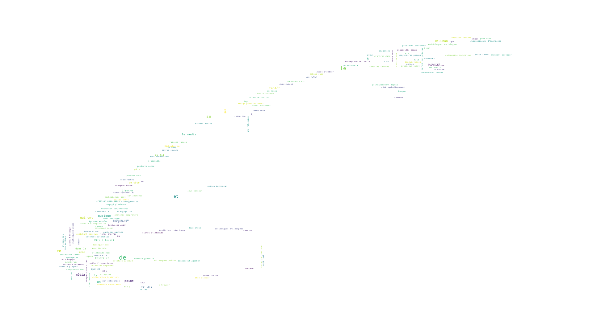

Le Média
au bord de l'eau à double vague
un homme debout un bras allongé
tenant dans son dos un poisson droit
le protégeant de son avant-bras tendu
que renifle parfois du museau un bœuf
parfois un autre animal aquatique.
Le média est une lecture des images qui dans le regard de la paume s’esquissent.
L’écriture (the written word) est l’une des 26 lettres de l’alphabet médiatique de McLuhan, placée entre la parole (the spoken word) et l’ensemble des routes et des cartes (roads and paper routes), soit entre ce qui se perfore performe, prononce, articule, s’expose dans l’espace et ce qui l’organise, le planifie, l’aplatie
(
Citation: 1964
McLuhan,
M.
(1964).
Understanding Media: The Extensions of Man.
McGraw-Hill.
)
. Au travers des formes technologiques de sa diffusion et de sa production (dont la machine est un des principes) McLuhan pense l’écriture en termes de structure et en fait, c’est là son originalité, un média en tant que tel (bien que le terme média puisse désigner bien des choses pour le sociologue canadien). Si son approche est principalement historiographique, elle a le mérite de faire de l’écriture une architecture active de la culture, sans lui donner la prédominance intellectuelle à la Goody
(
Citation: 1977
Goody,
J.
(1977).
The Domestication of the Savage Mind.
Cambridge university press.
)
, au même titre que le vêtement, l’argent ou la presse.
Le bonheur des médias est la négation de leurs dispositifs matériels. ( Citation: Kittler, 2018, p. 363 Kittler, F. (2018). Gramophone, film, typewriter. les Presses du réel. )
Si la trace écrite est une force médiatique, elle hérite tout naturellement du pouvoir de disparition sous sa propre forme : de ne plus être visible, mais cachée en amont de ce qu’elle formule.
le littéraire dans le dos du littéraire
texte vu, discours lu,
écriture mue.
La capacité du média à endormir les sens et discernements (ce que McLuhan nomme narcosis ( Citation: 1964 McLuhan, M. (1964). Understanding Media: The Extensions of Man. McGraw-Hill. ) ) fonctionne comme une hypnose transparente qui trouve prise autant sur une tendance narcissique (l’humain aime se contempler dans les miroitements techniques) que sur une habitude d’idéalisation : face au mot écrit, l’observation cherchera d’abord l’acte de lecture sémantique, ou graphique, d’un élément pris comme un ensemble de signes, avant de creuser l’inscription et y voir sa présence dans une matière. Autrement dit, écho lointain depuis la caverne platonicienne, l’entendement contemple les projections avant de percevoir que la provenance des ombres provient de figurines manipulées dans le dos de l’observateur.
Pour qu’il y ait miroir du monde, il faut que le monde ait une forme. ( Citation: Eco, 2022 Eco, U. (2022). Le nom de la rose (Nouvelle éd. augmentée des dessins et notes préparatoires de l'auteur). Bernard Grasset. )
Ombre et transparence, autant de motifs qui amènent à oublier l’incarnation, traversent l’époque de l’art moderne en laissant leurs traces dans le paysage théorique. Dans son essai sur les fondements théoriques de l’art moderne ( Citation: 2004 Junod, P. (2004). Transparence et opacité: Essai sur les fondements théoriques de l’art moderne pour une nouvelle lecture de Konrad Fiedler. J. Chambon. ) , Junod emploie justement les termes de transparence et d’opacité (qui rappellent les termes d’immediacy et d’hypermediacy employés par Bolter et Grusin dans leur typologie des médias ( Citation: 2003 Bolter, J. & Grusin, R. (2003). Remediation: Understanding New Media (6. Nachdr). MIT Press. ) ) pour distinguer deux approches de l’art : la mimèsis dont la pratique a largement dominé l’histoire de l’art se fonde sur la transparence tandis que la poièsis où la création fonctionne de manière autonome se fonde sur l’opacité. La poièsis serait selon l’auteur ce qui inspire désormais la pratique de l’art moderne : créant opacité, mais aussi bruit. Le bruit d’une littérature « brouhaha » ( Citation: Ruffel, 2010 Ruffel, D. (2010). Une littérature contextuelle. Litterature, 160(4). 61–73. Retrieved from https://www.cairn.info/revue-litterature-2010-4-page-61.htm ) est celui d’une explosion des genres et des cadres d’une tradition d’écriture en une multitude de formes médiatiques qui aujourd’hui s’entrecroisent peut-être plus rapidement et collaborent plus intimement.
Tout comme l’artiste plasticien, le poète contemporain n’inscrit désormais plus son art dans un seul médium, ici en l’occurrence le texte, mais use de tous les langages à sa disposition ( Citation: Ruffel, 2010 Ruffel, D. (2010). Une littérature contextuelle. Litterature, 160(4). 61–73. Retrieved from https://www.cairn.info/revue-litterature-2010-4-page-61.htm )
S’il peut être vrai que l’art se détache de conventions et de référents clairement identifiables, la création n’en demeure pas moins inscrite au sein d’un contexte médiatique et déterminée par la capacité des technologies à effacer leurs présences matérielles. Le nœud de la question de l’approche médiatique de l’écriture est donc toute la question de déterminer les rapports de présences.
cartographier un terrain
où met-on la limite à notre puissance ?
un panneau droit en plein dans le milieu
Observer l’écriture au travers du prisme médiatique implique ainsi le retournement : se retourner pour étudier la provenance des signes, soit aller à la rencontre des formes médiatiques, à la rencontre des théories qui les ont pensés mais également des images et des romans construits autour de ces formes pour permettre à l’œil d’en distinguer les contours.
In media res #
Tantôt dispositif ( Citation: Agamben, 2006 Agamben, G. (2006). Théorie des dispositifs. Poésie, N° 115(1). 25–33. Retrieved from https://www.cairn.info/revue-poesie-2006-1-page-25.htm ) , artefact ( Citation: Zacklad, 2005 Zacklad, M. (2005). Transactions communicationnelles symboliques : innovation et création de valeur dans les communautés d’action. A paraître in, Lorino, P., Teulier, R. (2005), « Entre la connaissance et l'organisation, l'activité collective », Maspéro, Paris.. Retrieved from https://archivesic.ccsd.cnrs.fr/sic_00001326 ) , message ( Citation: McLuhan, 1964 McLuhan, M. (1964). Understanding Media: The Extensions of Man. McGraw-Hill. ) , milieu ( Citation: Méchoulan, 2017 Méchoulan, E. (2017). Intermédialité, ou comment penser les transmissions. Fabula Colloques. Retrieved from https://www.fabula.org:443/colloques/document4278.php ) , conjonctures ( Citation: Larrue & Vitali-Rosati, 2019 Larrue, J. & Vitali-Rosati, M. (2019). Media Do Not Exist: Performativity and Mediating Conjunctures. Institute of Network Cultures. Retrieved from https://papyrus.bib.umontreal.ca/xmlui/handle/1866/22937 ) , ou même véhicule ( Citation: Baudelaire, 2016 Baudelaire, C. (2016). Fusées. Gallimard. ) [etc.], le média aura décliné ses peaux au fil des théories au point peut-être d’avoir épuisé ses mues. Délimiter le média, disséquer son anatomie, comprendre son évolution et identifier ses disparités comme ses connivences au fil des époques et des technologies sont quelques-uns (des nombreux) axes qui ont engagé plusieurs chercheurs/chercheures, même ceux ou celles qui, pour naviguer entre les épines d’une définition précise, ont eu recours à un voile d’imprécision : McLuhan parce qu’il fait du média tantôt le contenu, le contenant ou même le processus liant les deux, offre selon Eco un exemple de cogito interruptus ( Citation: 1985, p. 138 Eco, U. (1985). La guerre du faux. Grasset. ) . N’arrêtant pas le chenal médiatique, le monde entier est média aux yeux de McLuhan – ainsi autant habité de signes, symboles que de symptômes ( Citation: Eco, 1990 Eco, U. (1990). Travels in Hyperreality: Essays. Harcourt Brace. ) .
les signes qui nous guident sur le papier
les fils entrecroisés qui nous drapent
dans les rues qui ont été schématisées sur le papier
les roues mécaniques qui nous déplacent
sur les routes qui ont été dessinées sur le papier
les machines qui nous gardent en lien
au-delà des paysages qui ont été mis à l'échelle sur le papier
les autres corps qui nous assistent
pour écrire, modéliser, conduire, implémenter, reproduire.
Chose infime, entre-deux ( Citation: Sibony, 2003 Sibony, D. (2003). Création et entre-deux. Che vuoi ?, 19(1). 39–56. https://doi.org/10.3917/chev.019.0039 ) , ou universel (englobant l’écriture, le vêtement, l’automobile, l’ordinateur, et même la femme chez ( Citation: McLuhan, 1964 McLuhan, M. (1964). Understanding Media: The Extensions of Man. McGraw-Hill. ) ), le média semble être tantôt l’aiguille recherchée et la masse la dissimulant. Les différentes traditions théoriques et linguistiques qui ont émergé (principalement depuis le XXe siècle) sont réunies dans la pensée des médias bien que venues parfois d’horizons disciplinaires distincts,
à leurs propres vitesses,
avec leurs propres bagages embarqués,
elles se heurtent à un même mur :
où arrêtons-le média ?
à l'horizon ?
et si comme lui,
il ne cesse de se repousser plus loin
au fil de nos avancées ?
Avant d’entrer dans la chair de ces théories qui ont déjà établi leurs secteurs et les couloirs menant des uns aux autres, tentons un exercice.
Faisons tabula rasa du média.
Restons-en deçà de ce que nous connaissons de lui, mettons de côté tous les concepts, les discours, les imaginaires.
Posons à l’écart (symboliquement du moins) les livres lourds des synonymies et de métaphores qui font du média une roue tournant sur elle-même.
Plaçons-nous pour quelques lignes en terrain inconnu, dans la marge un peu plus dégagée pour une nouvelle esquisse du territoire.
Media rasa #
Ce jeu, qui pourrait s’apparenter à un exercice de style littéraire, n’a d’intérêt ici que celui de rebooter l’esprit vis-à-vis du média et de ses ombres projetées : un arrangement de matières, une construction d’images et de mots, qui peut se définir spatialement de multiples façons et où singulier et pluriel se confondent et se recouvrent. Médium, média, médias, avec ou sans accent ? La question de la nomination permet déjà une incision.
Revenons-aux livres qui n’avaient été écartés de la table d’étude seulement pour un court moment. L’Oxford English Dictionary définit pour la première fois medium en tant que dérivé du latin postclassique media. Le pluriel était utilisé plusieurs siècles avant le singulier qui fut préféré par l’utilisation moderne pour désigner les arrêts vocaux de type [β], [γ] et [δ] pour le grec ancien1.
me [δ[δ[δ]δ]δ] ia
Considérées comme des occlusives voisées, les lettres du média résonnent par l’interruption, car produites en obstruant l’air du chenal vocal, articulation qui fait vibrer les cordes vocales. Désignant largement trois saveurs littérales de voisement (bilabiale, vélaire et dentale), le média est sur le fil, entre l’expression et la rétention, et il fait sens par ce qui suit, par ce qu’il introduit, par ce qui le met en performance. Astuce orthophonique, pause en bout de bouche et paradoxe d’un son par vibration d’un air pris entre deux états, il est cet arrêt vocal non aspiré permettant la bonne transmission et le respect de conventions rythmiques poétiques. De la voix à la veine, il n’y a qu’une acception.

La réalité organique du média que traduisait déjà son premier sens, celui d’une typologie pour ces lettres dont la production sonore est un agencement particulier des chairs buccales, se poursuit dans la deuxième entrée du terme proposée par l’Oxford English Dictionary et transcrit un agencement de matières plus organiques : « la couche moyenne de la paroi d’un vaisseau sanguin ou lymphatique » et la troisième acception emboite en ce sens : « une veine principale […] dans le schéma de base de la nervation des ailes d’insectes ». Resserrement encore des racines médiatiques, c’est dans le sillon vocal ou veineux que s’exprime déjà l’idée d’une transmission et d’une articulation qui permet un fonctionnement physique (une envolée) ou langagier (une logorrhée).

Partagé par ces premiers lieux du média s’impose un sens qui sera ensuite assimilé comme le sens commun dans le latin moderne : l’entre, le milieu, ce qui fait lien. Comme à la frontière, n’étant ni une vocale tenue (les lettres [π], [κ] et [τ] sont des occlusives sourdes produites sans la vibration de la corde vocale), n’étant ni l’intima ou l’adventitia (les autres parties du vaisseau sanguin), le média est cet espace liminaire qui va peu à peu développer une identité propre, au-delà de la dynamique de l’identification par élimination ou par non-adéquation. Si se distinguent deux branches sémantiques (une vocale, une organique), l’exercice de création proposé ici joue à faire se rejoindre les deux : le défi n’est pas seulement poétique – contrainte littéraire ou labyrinthe à soi d’une écriture – mais également conceptuel. Le recouvrement des significations d’origine (que l’on rencontre aujourd’hui rarement, car devenues largement obsolètes) marque tout ce que peut incarner le principe de composition du média : jonction entre sangs, sens ou signes, arrangement physique spécifique, marge où se joue une action que l’on appellera médiation.




L’expérimentation implémente ici le principe du calligramme – de l’image par le texte, de la forme par la veine, de l’objet par l’articulation – en l’automatisant. Conçu avec Enzo Poggio, le programme en python inspiré de deux pratiques : le dessin d’image vectorielle (ou SVG) et la coordination de points par le clic sur l’image. Hébergé sur un dépôt Github (nommé Calligram express), l’environnement poetry, dans lequel est lancé le script scr.py, permet à partir d’une image (préférablement éditée en noir et blanc) de positionner sur cette même image les coordonnées de passage d’un texte également fourni dans le dépôt. Autrement dit, le programme ouvre un espace où cartographier le périple d’une écriture à partir d’un modèle figuratif. Le calligramme obtenu à la suite de l’étape de cartographie reflète non seulement la lecture de l’image par l’individu, mais par ailleurs l’arrangement efficace du texte par la machine. Parce que la première expérimentation s’inscrit dans l’étymologie ténue du média, le module a pris le nom de Nervure.
L’image du média demeure une construction de mots qui font bouger l’épaisseur d’un concept sans en remanier totalement sa structure : ne dérogeant pas à cette règle de construction de nos propres labyrinthes littéraires, Nervure est une image de mots nourrie à partir des propres mots qui en ont amené l’implémentation.
l'aile de cigale récoltée
en référence au sens organique du média
mute selon les tracés cartographiques,
selon les corrections de formules,
selon les lectures de l'image et les remaniements,
selon l'heure tardive également où les yeux scrutent,
selon enfin le développement technique de l'environnement en amont.
L’archive des louvoiements de l’expérimentation permet d’esquisser une première force du média dont les théories qui s’en revendiquèrent tireront parti : celle de la représentation.
[T]oute histoire des médias devrait s’accompagner d’une réflexion sur la sensibilité portée envers les médias, sur ce qui en eux fait rêver et imaginer, perceptible dans le geste même de les représenter. ( Citation: Pinson, 2012, p. 10 Pinson, G. (2012). L’imaginaire médiatique. Réflexions sur les représentations du journalisme au XIXe siècle. COnTEXTES. Revue de sociologie de la littérature(11). https://doi.org/10.4000/contextes.5306 )
La forme du calligramme remue au fil des modifications apportées au texte qui la construit (le premier paragraphe de la section In media res) et fait ainsi s’articuler discours et représentation dans un principe de composition graphique non-fixé. À partir de ce seuil que nous savons changeant selon nos propres mots, nous pouvons poursuivre l’intrusion.
L’entre-deux #
entrée dans l'entre
Si l’on poursuit la percée, tout en demeurant encore distants des théories inévitables qui petit à petit se dessinent à l’horizon, la définition moderne du terme médium développe l’imaginaire autour de l’entre-deux décliné en une série de figures : incarnation d’un intermédiaire social et culturel, les poètes et devins sont les véhicules de messages hors de la portée des humains et ont ainsi comme mission de transmettre cet inaccessible. L’intermédiaire (celui qui est au centre de la médiation et qui est défini par celle-ci) ou le messager sont des tiers indispensables à toute communication en ce qu’ils portent d’un endroit à un autre et participent non seulement d’une interaction, mais également d’une institution ( Citation: Krämer, 2015 Krämer, S. (2015). Medium, Messenger, Transmission: an Approach to Media Philosophy. Amsterdam university press. ) . Système de transmission d’informations lointaines, la fonction du messager (des dieux ou du langage) a depuis la figure d’Orphée et la tradition platonicienne permit de définir l’éthos du poète (homme) comme un être inspiré à qui il revient, seul capable d’assumer cette mission le plaçant entre deux mondes, de transmettre et donc de traduire. Dans le long poème Les rayons et les ombres (1839), Victor Hugo développe la figue allégorique du poète et sa fonction (I) : dévoiler la vérité tout en refusant de la livrer sans ce voile qui la détermine, soit jouer l’authentique par l’artifice. Les marques du poète, distingués par des formules antithétiques (s’exiler dans la foule, le silence afin d’entendre, l’ombre afin de voir le jour) et des oxymores (luttes serviles, gazons des villes) et des images synesthésiques (« entendre la nuit »), relèvent d’un sens entre plusieurs réalités. « Semeur », le poète l’est dans la mesure où il incarne cette figure entre deux états du monde (le poème décline les bipolarités des espaces [villes, campagnes], des statuts politiques [roi, peuple], des statuts ontologiques [hommes, divin]) ( Citation: Hugo, 2013 Hugo, V. (2013). Œuvres complètes. Tome VII (Hachette). HACHETTBNF. ) .
arpenteur de mondes
porte-voix
entre-sangs
Placé cependant au-dessus de la mêlée, déraciné d’une nature humaine à laquelle il n’a jamais totalement correspondu, le poète est une oreille tendue pour le divin : d’un point de vue sonore, le poème produit une série d’allitérations récurrentes avec la lettre [p] (« pieds des passants », « périlleux passages »). Entre deux, le poète est ainsi physiquement « Les pieds ici, les yeux ailleurs », entre passé et avenir pour transmettre au présent un enseignement. Autrement dit, le poète partage avec le média la caractéristique déterminante d’être autant défini par une fonction de transmission que de demeurer inclassable selon les catégories humaines, de se trouver légèrement en dehors du domaine des hommes. Comme le héros grec, le poète n’est en réalité pas celui qui écrit, mais celui au travers de qui le divin écrit : il est l’équivalent d’un prolongement de la plume.
Origine de cette dimension semi-humaine du poète, la figure du devin est déjà celui qui se fait le passeur de message pour l’humanité, celui qui va lire les signes des mondes pour en transmettre une vérité – lire les étoiles, la nuit, les entrailles, etc. – il va autrement ouvrir par la lecture, la lecture de l’écran ( Citation: Christin, 1995 Christin, A. (1995). L’image écrite, ou, La déraison graphique. Flammarion. ) , le principe d’écriture.
C’est en inventant la lecture pour comprendre les messages visuels venus des dieux que le devin nous a ouvert l’accès à l’écriture. Cette corrélation de la divination et de l’écrit est évidente en Chine, où le sage est celui qui peut « lire dans l’univers ». ( Citation: Christin, 1995, p. 180 Christin, A. (1995). L’image écrite, ou, La déraison graphique. Flammarion. )
Le passage à une fonction de transmission est, autant chez le poète, le devin que le médium (notamment dans les phénomènes d’incorporation et de matérialisation des « esprits »), synonyme d’une transfiguration.
pieds sur terre
yeux ailleurs
esprit au-delà
Ce dont le médium se fait l’intermédiaire est un accès à une part non-humaine du monde. La parole transmise, qu’elle soit dite prophétie, poème ou élégie, par les propres configurations de la transmission, se trouve alors prise dans un système d’abstraction. La position de McLuhan, qui d’une main fait du média « le message » et de l’autre brandit un ouvrage comme un livre de lois « pour comprendre les médias », n’est autre que celle d’un messager, porte-parole qui livre une vision du monde où des éléments, qui n’avaient auparavant que peu d’épaisseur ou d’intérêt pour les sciences, deviennent les symboles et marqueurs de phénomènes fondamentaux. Cette tendance du chercheur au lien, à trouver le sens du média dans chaque particule, est justement ce que Eco désigne comme cogito interruptus.
Cogito interruptus is typical of those who see the world inhabited by symbols and symptoms. Like someone who, for example, points to the little box of matches, stares hard into your eyes, and says, “You see, there are seven…”, then gives you a meaningful look, waiting for you to perceive the meaning concealed in that unmistakable sign.
Cogito interruptus is also typical of those who see the world inhabited not by symbols but by symptoms: indubitable signs of something that is neither here below nor up above, but that sooner or later will happen…
Cogito interruptus is not a great prophetic, poetic, psychological technique. Only that it is ineffable. And it takes real faith in cogito interruptus – and a wish that readers understand me – for me to venture to speak of it, no matter what. ( Citation: Eco, 1990 Eco, U. (1990). Travels in Hyperreality: Essays. Harcourt Brace. )
Le Cogito interruptus est typique de ceux qui voient le monde habité par des symboles et des symptômes. Comme quelqu’un qui, par exemple, vous montre une petite boîte d’allumettes, vous regarde fixement dans les yeux et vous dit : « Tu vois, il y en a sept… », puis vous jette un regard significatif, attendant que vous perceviez le sens caché dans ce signe sans équivoque.
Le Cogito interruptus est également typique de ceux qui voient le monde habité non pas par des symboles, mais par des symptômes : des signes indubitables de quelque chose qui n’est ni ici-bas ni là-haut, mais qui tôt ou tard se produira…
Le Cogito interruptus n’est pas une grande technique prophétique, poétique, psychologique. Il est seulement ineffable. Et il faut une véritable foi dans le cogito interruptus – et le souhait que les lecteurs me comprennent – pour que je me risque à en parler, quoi qu’il arrive. (traduction personnelle)
Symbole ou symptôme, le média appréhendé comme message a quelque chose d’un automatisme du sens, d’un réseau tentaculaire de connexions significatives, de la révélation révolutionnaire, qui amène à mettre à distance ses propres conditions matérielles. Dépassement de l’objectivité et de l’entendement du commun des mortels, le médium n’a de corps que pour être transfiguré : ce n’est pas un livre que je lis, mais Victor Hugo qui me parvient au-delà de la matière.
Le chapelet est un medium, un véhicule ; c’est la prière mise à la portée de tous. ( Citation: Baudelaire, 2016, p. 635 Baudelaire, C. (2016). Fusées. Gallimard. )
Gardant au creux un héritage de transfiguration, le sens moderne, qui apparaît dans la deuxième moitié du XIXe siècle et qui, pour Baudelaire, relève encore d’une part divine comme d’une institution religieuse (pour étymologiquement, faire lien), se précise pour favoriser la valeur de transport : qu’il s’agisse de transport dans le temps (la mémoire ( Citation: Méchoulan, 2008 Méchoulan, E. (2008). La culture de la mémoire : ou comment se débarrasser du passé ?. Presses de l'Université de Montréal. ) ) ou dans l’espace (support d’inscription), les médiums ou média sont à comprendre comme des environnements sociaux et institutionnels (intégrant les médiums qui sont alors les appareils matériels et techniques) qui permettent des modes d’enregistrements, mémoriels, de l’information. C’est à partir de la culture de la communication de masse, associant volume à vitesse des développements, que le recouvrement du pluriel et du singulier se cristallise : les médias sont un contexte d’émergence, des puissances d’apparitions, de présence et d’effets de présence des médiums.
Dans la médiation comme dans l’expérience médiumnique, la transmission est affaire d’un équilibre entre transparence et opacité ( Citation: Larrue, 2020 Larrue, J. (2020). De l’intermédialité à l’excommunication. Cahiers d’Études Germaniques, 1 volume(79). 31–48. https://doi.org/10.4000/ceg.12226 ) , entre rayon et ombre : le médium, l’individu qui va incarner un accès à un hors-monde, est tel parce qu’il dissimule son fonctionnement. Entre élitisme et mystère, c’est là une figure qui semble permettre de lier le principe de médiation à des figures plus courantes de l’artifice : poète, magicien, devin. À la manière d’une performance d’illusionnisme, le médium est justement de métier celui qui va diriger notre attention vers ce qui dissimule plutôt que vers ce qui révèle, et c’est en cela que cette posture de démonstration est un entre-deux médiatique. La médiation du médium fonctionne précisément si l’absence est bien représentée au présent ( Citation: Larrue, 2020 Larrue, J. (2020). De l’intermédialité à l’excommunication. Cahiers d’Études Germaniques, 1 volume(79). 31–48. https://doi.org/10.4000/ceg.12226 ) : si donc l’enjeu de la présence est au cœur de la définition du médium, la représentation des effets différents de présences (direct et indirect, évident ou difficile à percevoir) constitue la mécanique du média. « Narcose » ( Citation: McLuhan, 1977 McLuhan, M. (1977). Pour comprendre les média : les prolongements technologiques de l’homme. Éditions du Seuil. ) ou impératif fonctionnel ( Citation: Larrue & Vitali-Rosati, 2019 Larrue, J. & Vitali-Rosati, M. (2019). Media Do Not Exist: Performativity and Mediating Conjunctures. Institute of Network Cultures. Retrieved from https://papyrus.bib.umontreal.ca/xmlui/handle/1866/22937 ) , toute la démonstration du médium est alors de dissimuler son fonctionnement et c’est par cette dissimulation que le médium est médium : il ne transmet pas seulement un accès, il est une mise en scène de cette capacité à transmettre.
L’entre de l’entre #
Définir les modalités de présence de l’entre implique pour le discours de distinguer non seulement deux côtés de part et d’autre, dont on interrompt les arêtes pour circonscrire le territoire du milieu, mais également une temporalité à l’image d’une frise chronologique où le dernier arrivé est toujours le plus incertain. Cette perspective du médium (transmission et représentation incarnée de la transmission) est ce que traduit notamment la typologie des médias proposée par Bolter et Grusin ( Citation: 2003 Bolter, J. & Grusin, R. (2003). Remediation: Understanding New Media (6. Nachdr). MIT Press. ) : les types immediacy (transparence) et hypermediacy (authenticité). Les typologies à l’origine, les types hot et cool de McLuhan ( Citation: 1964 McLuhan, M. (1964). Understanding Media: The Extensions of Man. McGraw-Hill. ) , s’inscrivait déjà dans une certaine dépréciation d’un type pour un autre.
soufflant le froid
brûlant le chaud
lecture est température ressentie par les sens
et la vitesse de leurs transmissions aux corps
Les médias de type hot sont ceux qui demandent peu d’effort de participation de la part des usagers parce que formés sur l’amélioration d’un sens unique (high definition of a single sense) comme la radio, la lecture, la peinture, le cinéma ; tandis que les médias de type cool sont ceux qui vont exiger une grande participation de la part des usagers parce que structurés sur des informations manquantes, une définition pauvre (low definition) comme le téléphone, la télévision, les dessins-animés, etc. Loin de considérer ces suites typologiques comme des bases d’un monument définitionnel, il faut voir cette proposition de McLuhan comme un exercice de style.
première démonstration d'une entreprise
*cogito*
comprendre du fonctionnement des médias tout en restant en eux
saisir les dynamiques de médiation
*grasp* les effets d'utilisation
faire se rencontrer les effets de nature et de structure
La saveur de l’expérimental, de l’exploratoire et du kinesthésique de la proposition de McLuhan – qui comme Kittler a été placé au-devant de traditions théoriques, éclipsant les chercheurs ayant auparavant travaillé sur ces questions – si elle menait à des approximations et des raccourcis de l’imaginaire, a été quelque peu perdue dans les typologies qui ont suivies.
un média n'est plus ce que l'on perçoit
miroir technique des sens
mais une structure du réel
puissance de l'ingénieur sur le monde
En reprenant une dynamique binaire et hiérarchique où, le plus souvent, un type est établi au détriment de l’autre, Bolter et Grusin, et Archibald à leur suite ( Citation: 2009 Archibald, S. (2009). Le Texte et la technique. Le Quartanier. ) , ont proposé des types médiatiques qui essayent fondamentalement toujours de comprendre la présence médiatique. L’immediacy désigne « un type de représentation visuelle dont le but est de faire oublier au spectateur la présence du médium et de lui faire croire qu’il est en présence des véritables objets de la représentation » ( Citation: Bolter & Grusin, 2003, p. 272 Bolter, J. & Grusin, R. (2003). Remediation: Understanding New Media (6. Nachdr). MIT Press. ) , pour reprendre une expression des auteurs : c’est une window through. L’hypermediacy a contrario désigne « un style de représentation visant à rappeler au spectateur la présence d’un médium » ( Citation: Bolter & Grusin, 2003, p. 272 Bolter, J. & Grusin, R. (2003). Remediation: Understanding New Media (6. Nachdr). MIT Press. ) , c’est une window at.
je te vois au travers
je te vois de travers
et le média toujours nous regarde droit
Définie ainsi, la question se pose de savoir si ces types sont du côté de l’intention ou de l’effet. Selon Archibald, les typologies de Bolter et Grusin participent d’une phénoménologie de la réception ( Citation: Archibald, 2009 Archibald, S. (2009). Le Texte et la technique. Le Quartanier. ) et, en cela, elles ne semblent pas pouvoir être assimilées totalement par les notions d’opacité et de transparence, avalées entièrement par le rayon ou l’ombre. Elles se posent selon une structure bicéphale, mais également chronologique. L’hypermediacy a été conçue à la suite de l’immediacy et, peut-être en partie pour cette raison, est un type moins développé, plus évasif et restreint dans sa définition même.
À la suite de cette typologie des médias – jeu de surenchère de termes-boîtes dans lequel les joueurs reconnaissent le caractère relatif de leurs mains – Archibald proposera des types, qui posent des problématiques semblables : la fluidité « l’état d’un support sur lequel nous avons peu de prise et dont le contenu est perceptible en surface » qui correspond à l’immediacy, et la stabilité est « état d’un support solide et bien souvent statique » à l’hypermediacy ( Citation: 2009 Archibald, S. (2009). Le Texte et la technique. Le Quartanier. ) . À l’insatisfaction éternelle de terminologies justes (qui auront toujours tendance à aplatir et essentialiser les faits) s’ajoute tout particulièrement dans la proposition d’Archibald une problématique opposition (revenant ainsi à un héritage mcluhanien). La lecture donnée par Hayles, loin de résoudre le nœud ou juste d’en clarifier les fils, a le mérite de lisser quelque peu le principe d’antagonisme au sein du média : les catégories, comme dans un écosystème, sont à l’image des prédateurs et des proies.
tu traques
je me tapis
tu pistes et guettes
je scrute et veille
tu chasses
je prends ton revers
Prédateurs ou proies développent des stratégies distinctes qui « s’inter-impliquent », c’est-à-dire qu’elles fonctionnent en symbiose. Dans le cadre des catégories dans l’entre, cela implique que toute typologie, quelle que soit la stratégie de discours déployée, est poreuse, interchangeable selon la focale : c’est de la symbiose ou de la synergie de ces boîtes qu’émerge le fonctionnement théorique du média.
Ces clefs de lecture définissent au final une même tendance, faire oublier sa présence et la rappeler avec persuasion : balancement qui ne doit pas permettre au fond de distinguer des types, mais permettre de le placer en tension. Le média comme le médium sont une question d’agencement de la présence et de jeu sur les effets de présences produits qui se fondent sur des renversements successifs dépendamment d’où se pose notre attention. Faire oublier le médium, son mode opératoire, dans la médiation relève de la transparence tandis que laisser visible la présence du médium s’apparente à l’opacité. Dans l’authenticité comme dans l’opacité, le médium au fond ne fait que suivre sa feuille de route et les sensations de disparition de sa nature technique, ou de la dimension logique de sa démonstration, relèvent de la réussite de cette dimension. La logique essentialiste qui se dessine dans les contours des typologies médiatiques fonctionne en un sens comme une hantise de la notion, condamnée à un éternel entre-deux.
Si les typologies présentées permettent d’établir des degrés de perceptibilité ou d’évidence de la médiation ( Citation: Larrue, 2020 Larrue, J. (2020). De l’intermédialité à l’excommunication. Cahiers d’Études Germaniques, 1 volume(79). 31–48. https://doi.org/10.4000/ceg.12226 ) , cette phénoménologie de la réception permet de considérer l’écriture comme un jeu de dosage : la médiation opère lorsque transparence et opacité se rejoignent pour constituer un objet qui opère à l’œil nu, mais sans révéler toutes ses techniques.
La dynamique métonymique, l’imaginaire divin, la question de la subjectivité des typologies amènent à la même question que s’est posée la pensée intermédiale ( Citation: Larrue, 2020 Larrue, J. (2020). De l’intermédialité à l’excommunication. Cahiers d’Études Germaniques, 1 volume(79). 31–48. https://doi.org/10.4000/ceg.12226 ) :
Est-ce que le média existe ?
Ne sommes-nous pas face à une projection théorique ?
encore une ombre que laisse paraître le rayon d'un *cogito*
À une représentation superposant les images ?
À une limite de l’esprit qui ne peut saisir l’entre comme transmission ?
au-delà de l'inscription
permettant d'observer
de disséquer
ce qui *est*
Les typologies, en plus de cartographier le territoire d’un fait culturel, permettent de ramener ce fait (média ou médium) à l’humain, soit aux catégories de l’entendement, pour ne pas laisser à la part de l’ombre, non-humain ou divin, tout le pouvoir d’une articulation du monde.
Media muta #
Les systèmes des médias sont distingués en trois phrases dont se saisissent les études pour comprendre les effets de ruptures et de continuité d’une époque culturelle à une autre (notamment entre 1800 et 1900 ( Citation: Kittler, 1985 Kittler, F. (1985). Aufschreibesysteme 1800/1900 (3., vollst. überarb. Neuaufl). Fink. ) ) :
La phase 1, à partir de la guerre civile américaine, développa des techniques de stockage pour le son, l’image et l’écriture : le film, le gramophone et le système homme-machine qu’est la machine à écrire. La phase 2, à partir de la Première Guerre mondiale, développa pour les contenus stockés les techniques électriques appropriées de transmission : la radio, la télévision et leurs jumeaux plus cachés. La phase 3, depuis la Seconde Guerre mondiale, convertit le schéma fonctionnel de la machine à écrire en une technique de prévision. ( Citation: 1999, p. 393 Kittler, F. (1999). Gramophone, Film, Typewriter. Stanford University Press. )
Les premiers temps de la pensée des médias se sont articulés autour de la question de l’être de l’objet d’étude : de ses effets de présence entre opacité et transparence, de ses polymorphiques manifestations culturelles jusqu’à la dynamique du mouvement qui vient le définir et l’impossibilité de le saisir (« to grasp » qui fait partie du vocabulaire des premiers intermédialistes), le média est un jeu de mains dont les règles dérogent aux théories.
Media rosa #

Ein Medium ist ein Medium ist ein Medium. Das Wort sagt es schon: zwischen okkulten und technischen Medien besteht kein Unterschied. Ihre Wahrheit ist die Fatalität, ihr Feld das Unbewußtes den Glauben, der eine Illusion ist, nie findet, bleibt nur, es zu speichern. ( Citation: Kittler, 1985, p. 288 Kittler, F. (1985). Aufschreibesysteme 1800/1900 (3., vollst. überarb. Neuaufl). Fink. )
A medium is a medium is a medium. As the sentence says, there is no difference between occult and technological media. Their truth is fatality, their field is the unconcious. And because the unconscious never finds an illusory belief, the unconscious can only be stored. ( Citation: Kittler, 1990, p. 229 Kittler, F. (1990). Discourse Networks 1800/1900. Stanford University Press. )
Un média est un média est un média. Tout est dit : il n’y a pas de différence entre les médias occultes et technologiques. Leur vérité relève de la fatalité, leur domaine de l’inconscient. Cet inconscient, parce qu’il ne rencontre jamais la conviction qui est une illusion, il ne reste qu’à l’enregistrer. (traduction personnelle)
Paraphrase de la formule de Stein, « Rose is a rose is a rose is a rose » ( Citation: 1993 Stein, G. (1993). Geography and Plays. University of Wisconsin Press. ) 2, c’est à la fois la nature multiple du média et son caractère intransmissible que la formule de Kittler, l’un des premiers « archéologue[s] des médias » ( Citation: 2015 Kittler, F. (2015). Mode protégé. les Presses du réel Labex Arts-H2H. ) , énonce. Si les premières lectures de Stein ont lu un état de fait des choses (une fatalité quelque peu empirique où « les choses sont ce qu’elles sont »), c’est surtout la loi de l’identité qui est discutée ici. Malgré sa tonalité assertive, « Rose is a rose is a rose is a rose » se structure comme un labyrinthe sémantique entre redondances et impasses du nom dans le discours. Le constat quelque peu nostalgique que fait Stein est celui de dire que la rose n’est désormais plus seulement la rose réelle, mais porte avec elle tout l’imaginaire (et particulièrement les archétypes issus de la littérature romantique) (idée formulée notamment lors de son Discours à l’Université d’Oxford).
(la) Stat rosa pristina nomine
Nomina nuda tenemus3
( Citation: Eco, 2022 Eco, U. (2022). Le nom de la rose (Nouvelle éd. augmentée des dessins et notes préparatoires de l'auteur). Bernard Grasset. )
Alors que la rose n’existe plus que par son nom
Nous gardons les noms à l’état nu
(traduction personnelle avec la relecture de Mathilde Verstraete)
La question de la chose, d’un héritage et du nom, n’est pas nouvelle et le choix de la figure de la rose par Stein n’est pas anodin tant il s’inscrit dans une temporalité longue : il se réfère à la querelle des universaux, thématique que reprend en fil narratif Le Nom de la rose d’Eco. Dans cette querelle (que l’on peut dater pour le monde occidental de Platon et d’Aristote et mener jusqu’à la réflexion moderne de David M. Amstrong), la rose, cultivée par Abélard (Glossae II : Logica Ingredientibus 1121), a servi de concept pour cristalliser tout l’enjeu d’une approche logique.
Le concept succède-t-il à la chose (post rem) ? Et dans cette vision nominaliste, les universaux sont donc des mots, au sens de souffles de voix (voces). Le concept précède-t-il la chose (ante rem) ? Et dans cette vision réaliste, les universaux sont des choses du réel (res). Ou, position défendue par Abélard, le concept réside-t-il dans la chose (in re) ? Dans cette position médiane, les universaux sont des concepts (intellectus conceptus) qui demeurent des constructions mentales établies par rapport à la réalité.

La rose d’Abélard cultivée par Stein et bouturée par Kittler est par le nom : « rose » perdure sans le réel des roses et la rose « by any other name would smell as sweet » ( Citation: Shakespeare, 2008 Shakespeare, W. (2008). Romeo and Juliet (Nachdr.). Arden Shakespeare. ) . Apposée au média, la perspective de la rose paraît comme une tautologie, fait du concept une construction mentale et ténue, « peu de choses, mais ce sont des roses »4
En liant le destin du média à celui de la rose, Kittler pose justement la question de la définition et l’impossible correspondance entre le mot et la chose.
une rose comme un aveu
peu de chose
qu'une querelle de jardiniers
Aujourd’hui chargé de bien d’archétypes (dont certains évoquent une période romantique), le média demeure, et c’est ce que rappelle Kittler comme McLuhan avant lui, une réalité multiple : il n’existe pas par essence.
Cette conception du média se retrouve formulée ainsi par Manovich quant à la construction technique de médias nouveaux succédant à des médias plus anciens :
New media objects are rarely created completely from scratch; usually they are assembled from ready-made parts. Put differently, in computer culture authentic creation has been replaced by selection from a menu. In the process of creating a new media object, the designer selects from libraries of 3D models and texture maps, sounds and behaviors, background images and buttons, filters and transitions. ( Citation: Manovich, 2001, p. 120 Manovich, L. (2001). The Language of New Media. MIT Press. )
Les objets néomédiatiques sont rarement créés ex nihilo ; ce sont généralement des assemblages de parties toutes faites. Autrement dit, dans la culture informatique, la création authentique a été remplacée par la sélection dans un menu. Au cours du processus de réalisation d’un nouvel objet, les concepteurs sélectionnent dans un fonds des modèles et des textures 3D, des sons et des comportements, des images d’arrière-plan et des boutons, des filtres et des transitions. ( Citation: Manovitch, 2010, p. 248 Manovitch, L. (2010). Le langage des nouveaux médias. les Presses du réel. )
Les objets des nouveaux médias sont rarement créés de toutes pièces ; ils résultent généralement d’un assemblage de pièces prêtes à l’emploi. Autrement dit, dans la culture informatique, la création authentique a été remplacée par la sélection dans un menu. Lors de la création d’un nouvel objet multimédia, le concepteur choisit parmi des bibliothèques de modèles 3D et de maquettes de texture, de sons et de comportements, d’images d’arrière-plan et de boutons, de filtres et de transitions. (traduction personnelle)

Qu’il s’agisse de nouveaux ou d’anciens médias, le reproche qui a pu être fait à McLuhan de ne pas définir le média ou de le faire finir en somme – d’en faire tantôt le canal, le code et la forme du message – rencontre ici un argument en faveur du chercheur canadien : le média est l’ensemble de ces éléments en interrelation. Aussi irritant que cela puisse être de l’admettre – on l’admettra encore trop – le flou définitionnel et polymorphique du média McLuhan apparaît comme une solution au nom. L’ouvrage de McLuhan qui ouvre officiellement la tradition des Media Studies non seulement l’étude sur un objet laissé de côté en en affirmant la portée culturelle, mais anticipe déjà cet objet en termes de relation. Le sous-titre de son étude, The Extension of Men, résonne ainsi dans une certaine ironie sous-entendue : le média serait-il une construction théorique et lexicale de l’homme ?
Le nom n'est pas ce qui libérera des épines de la rose
Face aux multiples têtes de la chimère nominale,
les typologies ne peuvent éviter les morsures
les images la dévoration de nos entendements
L'éveil de la narcose se fait par l'observation de l'hydre,
l'enregistrement de nos illusoires convictions,
l'ironie d'une essentialisation qui n'empêche pas
les ogives de repousser sans cesse sur les terrains de nos théories
La ronde autour de l’entre #
Née dans l’effervescence des développements des technologies et des applications numériques, la pensée intermédiale est une pensée de la médiation. Elle s’est d’abord centrée sur les médias, leur genèse, leurs interactions, leur action sur les milieux d’où ils émergent et qu’ils transforment. ( Citation: Larrue, 2016 Larrue, J. (2016). Du média à la médiation : les trente ans de la pensée intermédiale et la résistance théâtrale. In Théâtre et intermédialité. (pp. 27–56). Presses universitaires du Septentrion. https://doi.org/10.4000/books.septentrion.8158 )
La question de la réalité du média arrive à un moment de rupture dans les pensées des médias, mais émerge également à l’image d’une revendication en réaction à l’essentialisation du média : « la période médiatique, dominée par cette idée de médias relativement stables et isolables, et la période postmédiatique issue de la crise du média » ( Citation: Larrue, 2020 Larrue, J. (2020). De l’intermédialité à l’excommunication. Cahiers d’Études Germaniques, 1 volume(79). 31–48. https://doi.org/10.4000/ceg.12226 ) .
les figures rejoignent les figurations
En partant du principe que si substance il y a, c’est parce qu’elle est prise dans un réseau de relations (un schéma intermédial), les théories de l’intermédialité ont pensé l’« entre » en le liant dans un premier temps à l’« autour » pour se focaliser dans un deuxième temps sur la médiation, comme état au-delà d’un contexte ( Citation: Larrue, 2016 Larrue, J. (2016). Du média à la médiation : les trente ans de la pensée intermédiale et la résistance théâtrale. In Théâtre et intermédialité. (pp. 27–56). Presses universitaires du Septentrion. https://doi.org/10.4000/books.septentrion.8158 ) . D’abord concept, l’intermédialité suit la même parallèle des Media Studies en se référant aux études littéraires ( Citation: Rajewsky, 2005 Rajewsky, I. (2005). Intermediality, Intertextuality, and Remediation: A Literary Perspective on Intermediality. Intermédialités : histoire et théorie des arts, des lettres et des techniques / Intermediality: History and Theory of the Arts, Literature and Technologies(6). 43–64. https://doi.org/10.7202/1005505ar ) et aux objets visuels. La médiation peut se concevoir comme un renvoi à une réalité, donc relevant du domaine de la mimèsis ( Citation: Junod, 2004 Junod, P. (2004). Transparence et opacité: Essai sur les fondements théoriques de l’art moderne pour une nouvelle lecture de Konrad Fiedler. J. Chambon. ) , mais cette considération trahit une certaine vampirisation de l’intermédialité par la pensée classique et occidentale des arts (où un art est toujours reproducteur de la réalité) que remettent justement en question les médiations non-mimétiques et celles ne renvoyant à rien d’autre qu’à elles-mêmes.
L’intermédialité repose sur un principe en apparence simple dont Marshall McLuhan avait eu l’intuition : un média porte en lui les traces de médias antérieurs et les graines de médias à venir. ( Citation: Larrue, 2016, p. 14 Larrue, J. (2016). Théâtre et intermédialité. Presses universitaires du Septentrion. https://doi.org/10.4000/books.septentrion.8153 )
Du média à la médiation, ou de la figure à son action, est une transition au principe de l’intermédialité qui fait écho à la dynamique interrelationnelle de McLuhan : si le sociologue canadien plaçait ce principe de relation au sein du monde médiatique (le contenu d’un média est toujours un autre média), l’intermédialité se distingue en semblant ouvrir ce paradigme à un ensemble de réalités culturelles (mais qui sont peut-être au fond toutes médiatiques).
[L]es médias ne font pas qu’interagir continuellement les uns avec les autres, ils sont eux-mêmes le produit de ces interactions. ( Citation: Larrue, 2020 Larrue, J. (2020). De l’intermédialité à l’excommunication. Cahiers d’Études Germaniques, 1 volume(79). 31–48. https://doi.org/10.4000/ceg.12226 )
À l’origine de la théorie intermédiale réside un besoin de sociabilité avec le média, un besoin de relation en tant que dialogue, un besoin d’incorporation également : un média, produit d’interactions, est un substrat de sociabilité humaine. Avant même les premiers textes intitulant l’intermédialité comme champ d’étude, Gitelman parle du média comme « socially realized structures of communication » (« structures de communication qui se réalisent socialement ») incluant ainsi à la fois la question technologique de leur conception, la question des pratiques et utilisations culturelles et celle des contextes de présence ( Citation: 2006, p. 7 Gitelman, L. (2006). Always Already New: Media, History and the Data of Culture. MIT Press. ) . Cette proximité entre sciences de la communication et intermédialité trouve cependant une limite dans la question de l’appartenance disciplinaire : la théorie intermédiale, et c’est aussi ce qui permet de distinguer ce courant des Media Studies, se forme à partir d’expertises philosophiques des médias, littéraires, artistes.
Articulation à la racine, la ronde du média présuppose en soi une distance qu’il vient habiter entre deux objets. Plutôt que de penser la substance de ce système, la théorie intermédiale – formée par les philosophes des médias (tel que Ole Hansen-Love en 1983) avant que les spécialistes des études médiatiques ne s’en emparent au milieu des années 1980 – cherchera à établir une épistémologie et une ontologie de l’inter, soit des relations.
À cette époque [les années 1980], les théories et les histoires des médias avaient tendance à isoler les médias les uns des autres et l’idée banale qu’aucun média ne pouvait être considéré comme une « monade » nous a amenés, quelques chercheurs et moi-même, à nous pencher sur les processus complexes et entrelacés qui étaient à l’œuvre dans les interactions ou lors des rencontres entre les médias. La notion d’intermédialité était basée sur la conviction qu’il n’y a pas de média pur et que, d’une part, tout média intègre des structures, des processus, des principes, des concepts, des questionnements issus d’autres médias apparus au cours de l’histoire des médias en Occident, et, d’autre part, tout média joue avec ces éléments. ( Citation: Müller, 1996 Müller, J. (1996). Intermedialität: Formen moderner kultureller Kommunikation. Nodus-Publ. ) traduction tirée de ( Citation: Larrue, 2020 Larrue, J. (2020). De l’intermédialité à l’excommunication. Cahiers d’Études Germaniques, 1 volume(79). 31–48. https://doi.org/10.4000/ceg.12226 )
Popularisé par Müller, le terme intermédialité annonce un programme pour opérer un décentrement5.
le passage de la monade
au labyrinthe des interactions
[Nous] devons reconnaître que ce ne sont pas les médias individuels qui sont premiers et qui sont mus ensuite intermédialement de l’un vers l’autre, mais que c’est l’intermédialité qui est première et les « monomédias » clairement séparés sont le résultat de blocages, d’incisions et de mécanismes d’exclusion institutionnels et réfléchis. ( Citation: Schröter, 2012, p. 30 Schröter, J. (2012). Four Models of Intermediality. Travels in Intermedia[lity]: Reblurring the Boundaries. 15–36. ) (traduction personnelle)
Le problème posé par ce programme scientifique est celui d’un héritage puisque, comme le souligne Méchoulan ( Citation: 2010, p. 37 Méchoulan, E. (2010). D’où nous viennent nos idées ? Métaphysique et intermédialité. VBL Éditeur. Retrieved from https://secure.sogides.com/editeurs/3/7/ext_9782896491476.pdf ) , nous demeurons, même le regard porté vers la relation, dans l’inter- fatal.
entre entre (d)eux
entre entre entre
qui sont eux-mêmes
entre entre (d)eux
Formé du préfixe « inter » et du radical « média », qui signifient tous deux « entre », […] [l’]intermédialité s’intéresse à ce qui trouve entre ce qui est entre. [italique dans le texte] Hors du cercle des intermédialistes, on a rapidement conclu que ce n’était pas grand-chose. ( Citation: Larrue, 2020 Larrue, J. (2020). De l’intermédialité à l’excommunication. Cahiers d’Études Germaniques, 1 volume(79). 31–48. https://doi.org/10.4000/ceg.12226 )
Tautologie et redondance, l’intermédialité se fragmente pour essayer d’éviter une généralisation essentialisante, mais propose un changement épistémique majeur6 : là où le mode de pensée traditionnel plaçait l’entre dans un entre-deux et dépendait des limites de ces bords, l’intermédialité doute de ses propres bornes pour les révéler elles-mêmes comme des entres. Des entres à l’infini de l’horizon, emboîtés dans des poupées russes sans fin (dans la mesure où la poupée russe est elle-même un entre emboîté dans des poupées russes, etc.) L’entre n’est donc pas une transition, c’est l’unique lieu qui cristallise tout l’effet de présence. En plus de l’entre-prise de l’intermédialité, la littérature qui s’y rattache va également rendre toute étude plus épineuse en refusant la fixité de l’entre : si distingués pour des besoins rationnels et dû à la limite de nos esprits, les entres sont les passagers d’un manège.
un entre passe
un autre entre l'entre et l'entre passe
tout ça sur un *in-between*
qui bouge de l'entre vers l'entre d'en face
Fluides et non figés, ils sont dès lors « difficilement saisissables dans leur nature et dans leur conjoncture ! » ( Citation: Larrue, 2020 Larrue, J. (2020). De l’intermédialité à l’excommunication. Cahiers d’Études Germaniques, 1 volume(79). 31–48. https://doi.org/10.4000/ceg.12226 ) La sentence tombe alors tandis que le manège continue de tourner : « Plus rien n’est fixe ni sûr » ( Citation: Larrue, 2020 Larrue, J. (2020). De l’intermédialité à l’excommunication. Cahiers d’Études Germaniques, 1 volume(79). 31–48. https://doi.org/10.4000/ceg.12226 ) .
Encore un tour de médiation #
[A] medium is that which remediates. It is that which appropriates the techniques, forms, and social significance of other media and attempts to rival or refashion them in the name of the real. A medium in our culture can never operate in isolation, because it must enter into relationships of respect and rivalry with other media. ( Citation: 2003, p. 65 Bolter, J. & Grusin, R. (2003). Remediation: Understanding New Media (6. Nachdr). MIT Press. )
Un média est ce qui remédie. Il s’approprie les techniques, les formes et la signification sociale d’autres médias et tente de rivaliser avec eux ou de les remodeler au nom du réel. Dans notre culture, un média ne peut jamais opérer isolément, car qu’il doit entrer en relation, de respect ou de rivalité, avec d’autres médias. (traduction personnelle)
Prise dans la roue, l’intermédialité se meut en parallèle de la notion de remédiation proposée par Bolter et Grusin qui cristallise l’idée d’un mouvement médiatique ( Citation: 2003 Bolter, J. & Grusin, R. (2003). Remediation: Understanding New Media (6. Nachdr). MIT Press. ) : dans une même paternité mcluhanienne, Bolter et Grusin proposent un mouvement médiatique qui ne serait pas soumis à une linéarité temporelle en la renversant même : « the formal logic by which new media technologies refashion prio media forms » ( Citation: 2003, p. 273 Bolter, J. & Grusin, R. (2003). Remediation: Understanding New Media (6. Nachdr). MIT Press. ) .
Exemple parmi d’autres, Birkerts, dans The Gutenberg Elegies ( Citation: 2006 Birkets, S. (2006). The Gutenberg Elegies: The Fate of Reading in an Electronic Age. North Point Press. ) , explique que, si changée par les nouveaux médias, l’imprimé et la culture de l’imprimé n’existent plus indépendamment des autres cultures médiatiques qui lui ont succédé (et inversement). En tant que dynamique d’interrelation, le média porte ainsi des strates plus anciennes de média passés ou en cours d’actualisation, mais ce lien présent-passé est réciproque : des esthétiques skeumorphiques qui réactualisent les fonctionnalités passées (les appareils photo qui remodèlent le son du déclencheur ( Citation: Monjour, 2018 Monjour, S. (2018). Mythologies postphotographiques. L’invention littéraire de l’image numérique. Les Presses de l'Université de Montréal. ) ) jusqu’aux germes des médias à venir portés par les médias présents. En plus de proposer une méthodologie pour comprendre l’histoire des médias, la pensée de la remédiation cristallise la capacité d’interrelation des médias, « c’est-à-dire leur capacité à se réinventer réciproquement » ( Citation: Acland, 2007 Acland, C. (2007). Residual Media. University of Minnesota Press. ) , ce qui mène aux hybridations des médias contemporains. Les résidus médiatiques ( Citation: Acland, 2007 Acland, C. (2007). Residual Media. University of Minnesota Press. ) , ce qui émergent de la transposition sont des indices qui portent des clefs de compréhension et d’analyse sur la réalité des objets.
Cycle, la remédiation n’implique pour autant que la prolifération des médias est un aplatissement du sens critique, où tout est tout et rien à la fois. Justement en lutte contre l’idée d’une écologie médiatique, la remédiation refuse de lisser le cycle pour permettre d’identifier les causalités enchevêtrées, les boucles de rétroaction, les inter-actions qui ont lieu.

ronde
gavotte
farandole
sauterie
le tout est de garder le rythme
pour *grasp* le furet après lequel on court
L’idée d’une culture où les médias divergent entre traditions, écologies et anciennetés fait figure de ronde où chaque danseur s’inscrit dans une chorégraphie plus large.
Il n’y a pas de média, mais des médiations.
Il n’y a pas de pensées des médias, mais des pensées des médiations.
Il n’y a pas de pensées des médiations, mais des pensées en médiations.
Leur essai Remediation: Understanding New Media paraît en 1999, soit une quinzaine d’années après l’émergence de la réflexion intermédiale et en propose une première modélisation forte. Retracer la paternité des termes serait retomber dans l’emboîtement des noms qui sont des noms qui sont des noms… S’ils parlent de relation, Bolter et Grusin, comme Gitelman, n’emploient pas le terme d’« intermédialité » tout en apportant une contribution majeure à l’évolution de la pensée intermédiale. L’idée même d’entre-médiation (médiation établissant les intermédiaires en synergie avec les faits culturels) se retrouve en différents lieux et termes (le groupe des nouveaux médias du MIT de Jenkins, l’archéologie des médias) avant la mise en place d’une instance de reconnaissance et de réunion (l’International Society for Intermedial Studies en 2014). Portrait loin de mener à la réunion d’espaces disciplinaires, la pensée de la remédiation, en plus de concentrer en une notion les avancées des pensées de la médiation entre la fin du XXe et le début du XXIe, ouvre les perspectives de l’analyse ou de l’art de l’enquête à des formes esthétiques inédites ( Citation: Despoix & Spielmann, 2005 Despoix, P. & Spielmann, Y. (2005). Présentation. Intermédialités : histoire et théorie des arts, des lettres et des techniques / Intermediality: History and Theory of the Arts, Literature and Technologies(6). 9–11. https://doi.org/10.7202/1005502ar ) tout en révélant les limites d’une période médiatique ( Citation: Larrue, 2020 Larrue, J. (2020). De l’intermédialité à l’excommunication. Cahiers d’Études Germaniques, 1 volume(79). 31–48. https://doi.org/10.4000/ceg.12226 ) .
les discours se répètent sous d'autres formes
les pas s'emmêlent
le cycle se tord
la ronde arrive à sa fin
La limite de la remédiation est en réalité la même que les pensées des médias précédentes. La remédiation dans la lignée de la pensée de McLuhan lutte contre la monade isolée (pour ne pas définir le média seulement sur la base de ses effets ou de ses structures), tout en y tombant et en essentialisant la lutte. À vouloir définir le média au travers d’une notion inédite (impliquant généralement une resémantisation7), ils l’essentialisent : « a medium is that which remediates ». Tout comme l’intermédialité, la pensée de la remédiation semble appeler une classification et apparaît comme phénomène synchrone mais distant de pensées : c’est en soulignant cette faiblesse que Hayles préfère au terme de remédiation (trop chargé de connotations et lié aux stratégies de l’hypermediacy et de l’immediacy) le terme d’intermédiation pour centrer sur un principe d’interaction entre écritures, modes et êtres.
Le souffle de sortie qu’offre la remédiation à l’écriture est celui de la destruction d’un mythe de l’origine : il n’y a pas de première remédiation, comme il n’y a pas de première écriture, mais une culture de la remédiation qui émerge progressivement par des phénomènes, conjonctures ou confitures confrontations. Comme le dit également Gitelman reprenant et adaptant la formule derridienne, si le média est mort, il est aussi « toujours déjà nouveau »
(
Citation: 2006
Gitelman,
L.
(2006).
Always Already New: Media, History and the Data of Culture.
MIT Press.
)
. L’existence du média est donc régie par un impératif de la médiation, selon une constante logique transformationnelle et communicationnelle.
et toujours rode le marbre du nom
la médiation n'est pas une essence
elle est un processus de production
« au nom du réel »
Dans le chenal du mouvement médiatique, l’objet d’étude (notamment du champ intermédial) est celui des conditions d’émergence d’un effet médiatique qui comprend aussi bien l’environnement technique que les individus qui en sont les agents. Il n’est pas certain que le décentrement du média et de son immutabilité ait fait complète révolution, les réflexes à l’essentialisation sont tenaces, soit par praticité (il faut bien nommer la chose), soit par convention. Ce qui avait nourri une théorie intermédiale, la préférence de la relation à l’essence et aux entités discrètes, retombe dans le vertige du nom, dont Kittler aurait appelé à l’exorcisme de la médiation ou, comme cela a été le cas, à l’excommunication.
Hors de la carte #
[N]o medium but mediation. (Galloway)
Le principe de médiation radicale développé par Galloway dans The Interface Effect ( Citation: 2014 Galloway, A., Thacker, E. & Wark, M. (2014). Excommunication: Three Inquiries in Media and Mediation. The University of Chicago Press. ) rompt avec plusieurs certitudes de l’intermédialité qui avait déjà déboulonné bien des acquis rassurant de la pensée des médias.
la ronde a arrêté de tourner
elle contemple désormais
les masques tombent
le narcisse d'une tradition se révèle à la surface
Comme un roman vis-à-vis de ses personnages et paysages, la théorie de l’intermédialité créait la réalité de ses propos et par là ses propres conditions d’existence : « […] l’intermédialité ne naissait pas des médias mais qu’elle produisait les médias » ( Citation: Larrue, 2020 Larrue, J. (2020). De l’intermédialité à l’excommunication. Cahiers d’Études Germaniques, 1 volume(79). 31–48. https://doi.org/10.4000/ceg.12226 ) . Au-delà de l’arrêt de la ronde, c’est aussi tout le modèle communicationnel ou médiatique qui est remis en cause : un média ne comprend pas totalement un autre média (la télévision n’est pas l’assemblage hybride de l’image animée et de la radio). Appelant à la mise à distance de la notion de remédiation – qui ne serait au fond qu’un type d’interaction parmi d’autres ne pouvant donc pas prétendre à assumer le rôle de modèle universel – émerge au plein jour une série de pratique non-remédiantes, de médiations qui échappent aux structures de médiation auparavant élaborées. Repentir de la rechute représentationelle qu’il avait participé à construire où la circulation d’une information se fait entre instance émettrice et réceptrice, Grusin publie Radical Mediation ( Citation: 2015 Grusin, R. (2015). Radical Mediation. Critical Inquiry, 42(1). 124–148. https://doi.org/10.1086/682998 ) , article qui reprend le problème de la médiation comme un processus qui ne peut se réduire aux seuls médias. En parallèle de cette publication, ou en initiation de cette dernière, les chercheurs Galloway, Thacker et Wark développaient une approche plus radicale, plus insolente vis-à-vis du média ou du processus médiatique : dans un essai intitulé Excommunication. Three Inquiries in Media and Mediation, ils proposent une réponse à la question de l’existence du média par le doute de son existence même.
Does everything that exists, exist to be presented and represented, to be mediated and remediated, to be communicated and translated? ( Citation: Galloway, Thacker & al., 2014, p. 10 Galloway, A., Thacker, E. & Wark, M. (2014). Excommunication: Three Inquiries in Media and Mediation. The University of Chicago Press. )
Est-ce que tout ce qui existe, existe pour être présenté et représenté, pour être médié et remédié, pour être communiqué et traduit ? (traduction personnelle)
Renversant la formulation de la question, Galloway, Thacker et Wark vont, en une série d’exemples, détruire le média et toute la construction du corps médiatique qui avait eu lieu en amont. Comment fait-on alors pour savoir que ça existe ? que ça est transmis ? ou qu’il y a même un ça qui transmet quoi que ce soit ? Plus de cadre à la médiation, que ce soit représentationnel ou communicationnel, la médiation est hors, ex, la communication : « la communication est une modalité de la médiation, elle n’en est ni le principe ni la matrice » ( Citation: Larrue, 2020 Larrue, J. (2020). De l’intermédialité à l’excommunication. Cahiers d’Études Germaniques, 1 volume(79). 31–48. https://doi.org/10.4000/ceg.12226 ) . Toute la pensée de l’excommunication parfait peut-être le projet de libération de la narcose narcissique à l’origine de la pensée des Media Studies en causant justement une sortie de route hors de la voie de la communication strictement humaine et en proposant d’aller vers le non-humain. À distinguer de l’échec de réception, ou de l’interruption, l’excommunication ne signe pas l’échec d’une médiation mais sa victoire sur un impératif communicationnel qui se double d’un mouvement où toute communication est justement impossible. Il ne s’agit plus de rendre accessible, de faire lien, de faire l’entre, soit d’ajouter deux bornes qui n’en sont pas, mais de « reveal inaccessibility in and of itself—they make accessible the inaccessible—in its inaccessibility » (« révéler plutôt l’inaccessibilité en elle-même et d’elle-même rendre accessible l’inaccessibilité dans son inaccessibilité ») ( Citation: Galloway, Thacker & al., 2014, p. 96 Galloway, A., Thacker, E. & Wark, M. (2014). Excommunication: Three Inquiries in Media and Mediation. The University of Chicago Press. ) . Cette déconstruction, loin de rendre inanimée une discipline, la fait s’enrichir de problématiques jusque-là écartées et qui viennent nourrir encore un objet d’étude désormais souple, vivant, organique, épais.
La dimension d’imparfaite, incomplète, impossible médiation se trouve au cœur de la notion d’excommunication, qui est autant un aveu d’échec vis-à-vis d’une logique d’efficacité ou de productivité, qu’un humble rappel de la perspective des sciences humaines : soit la possibilité d’étudier les échecs, les tentatives, les inavoués comme des objets d’études. Loin de se résumer à une faille de la médiation, l’excommunication permet de montrer la médiation comme le fait de ne pouvoir médier. Pour illustrer cette idée, Larrue fournit à ce titre un exemple extrêmement éclairant : le spectacle de magie ( Citation: 2020 Larrue, J. (2020). De l’intermédialité à l’excommunication. Cahiers d’Études Germaniques, 1 volume(79). 31–48. https://doi.org/10.4000/ceg.12226 ) . Dans cet évènement, la mise en scène vise à un double mouvement où l’imperceptible est montré comme tel d’une part et où l’illusion résulte de cette perception de l’imperceptible. En somme le spectacle de magie est le spectacle d’un non-spectacle dans le sens où la médiation consiste justement à ne pas montrer qu’elle ne médie pas. Le spectacle de magie dont « les effets magiques sont le résultat de processus techniques » ( Citation: During, 2002, p. 1 During, S. (2002). Modern Enchantments: the Cultural Power of Secular Magic. Harvard University Press. ) , est justement un lieu intéressant pour repenser la fonction du média parce qu’il marque le passage à une post-vérité de la représentation ou de l’imitation : il ne s’agit plus de savoir si les faits sont véritables ou non, mais de comprendre leur dynamique de renversement où la médiation ne renvoie qu’à elle-même.
De renversement en ruptures, la pensée des médias, si on lit ensemble l’évolution des théories intermédiales et le développement des Media Studies, parvient à une remise en question de son propre objet d’étude. Pour le devenir de la pensée intermédiale, Larrue parle notamment de « recentrement » ( Citation: 2016 Larrue, J. (2016). Du média à la médiation : les trente ans de la pensée intermédiale et la résistance théâtrale. In Théâtre et intermédialité. (pp. 27–56). Presses universitaires du Septentrion. https://doi.org/10.4000/books.septentrion.8158 ) , mais dans la perspective de l’écriture ici-bas il s’agit davantage de désécriture d’un nœud de théories où l’image retrouve une place de transmission.
Media imago #
le media est mort
vive le media
le roman continue
Que dire alors si le média ou même la médiation n’est pas saisissable, ingraspable, autrement que par le nom, l’essentialisation, la catégorie, la typologie qui vient aplatir toute l’épaisseur culturelle que ces mouvements, processus, vagues peuvent établir ? Comment parler du non-humain, d’un dépassement de l’individu en tant que tel, d’un hors impératif-communicationnel au travers de discours qui ne peuvent qu’être le fait d’humain en tant que tel ? Comment faire parler la médiation ?
L’imago est autant un rappel de l’image par le discours que la continuation du fil déroulé plus haut : le stade imaginal du développement de l’insecte est caractérisé notamment par le développement d’aile (en plus d’un appareil génital) mais désigne aussi sa dernière mue qui correspond à un mouvement d’extraction de l’être hors d’un cocon rigidifié et contraignant.
Media morpha #
Les projections des typologies du média et des différentes figurines taillées dans la chair de théories sont les reflets de positionnements quasi spatiaux vis-à-vis de l’objet d’étude : selon l’angle, le contexte et lieu d’observation, l’épaisseur de l’entre se module. Ces modulations trouvent traductions par des typologies mais également (et surtout) par des images menant la quête médiale à une narration filée.
Visualisez un écran face à vous.
Sa surface comme une toile de maître vous permet d’y projeter vos formes dans la langue qui vous convient.
Certains disent qu’il ne faut pas fixer l’écran trop longtemps au risque de succomber à son hypnose.
Certains disent qu’il faut regarder au travers pour rester dans l’éveil des sens.
Certains disent qu’en réalité, nos yeux ne perçoivent pas l’écran en tant tel mais les formes qui s’y trouvent projetées.
Certains disent qu’il faut sortir de l’écran, aller dans l’hors-écran, pour comprendre les formes projetées.
Poursuite de la scène de la caverne, reprise de l’introduction de Smith dans Exceptional technologies ( Citation: 2018 Smith, D. (2018). Exceptional Technologies: A Continental Philosophy of Technology. Bloomsbury Academic. ) , le principe de l’image, déjà amorcé dans les textes fondateurs des Media Studies, cherche à traduire autant la pluralité ontologique du média,
idéal : un canal de communication au-delà de la matière, des dysfonctionnements et frictions
théorique : une technologie de communication culturelle avec avant, pendant et après
pratique : un agencement, arrangement spécifique avec des lois d'utilisation
que le déploiement enthousiaste de perspectives d’étude revendiquant un territoire disciplinaire, et la remise en question fondamentale de toute essence médiatique.
Il s’agissait en effet de savoir si les métaphores, et les jeux de mots, et les énigmes, qui ont pourtant bien l’air d’avoir été imaginés par les poètes par divertissement, ne portent pas à spéculer sur les choses de manière nouvelle et surprenante… ( Citation: Eco, 2022 Eco, U. (2022). Le nom de la rose (Nouvelle éd. augmentée des dessins et notes préparatoires de l'auteur). Bernard Grasset. )
Pour lutter contre l’attraction d’une essentialisation, immobilité ou abstraction (qui sont autant de simplifications), le pluriel semble constituer un premier remède : si Smith parle de technologies ( Citation: 2018 Smith, D. (2018). Exceptional Technologies: A Continental Philosophy of Technology. Bloomsbury Academic. ) , Larrue et Vitali-Rosati proposent l’expression de « conjonctures médiatrices » ( Citation: 2016 Larrue, J. (2016). Du média à la médiation : les trente ans de la pensée intermédiale et la résistance théâtrale. In Théâtre et intermédialité. (pp. 27–56). Presses universitaires du Septentrion. https://doi.org/10.4000/books.septentrion.8158 ) comme une « pluralité irréductible de forces en jeu » ( Citation: 2021 Vitali-Rosati, M. (2021). Le fait numérique comme “conjonctures médiatrices”. Communication & langages, 208-209(2-3). 155–170. https://doi.org/10.3917/comla1.208.0155 ) (terme qui est « toujours au pluriel »). La notion de conjonctures médiatrices – comme « les éléments qui permettent, que, à un moment et dans un espace données, se produise un phénomène de médiation » ( Citation: Larrue, 2020 Larrue, J. (2020). De l’intermédialité à l’excommunication. Cahiers d’Études Germaniques, 1 volume(79). 31–48. https://doi.org/10.4000/ceg.12226 ) – s’arrime à deux courants de pensée (les Media Studies et les études intermédiales) pour régler une problématique qui semble alors commune aux deux ( Citation: Larrue & Vitali-Rosati, 2019 Larrue, J. & Vitali-Rosati, M. (2019). Media Do Not Exist: Performativity and Mediating Conjunctures. Institute of Network Cultures. Retrieved from https://papyrus.bib.umontreal.ca/xmlui/handle/1866/22937 ) . Décentrement de l’humain vis-à-vis du concept qui lui permettait de fonder toute une approche du monde, le média n’est pas tant une extension du corps de l’homme ou de ses sens, qu’une projection théorique de sa pensée. Les réalités du média suivent une logique qui dépasse l’humain, l’individu et fondamentalement sa mémoire du monde (dont l’histoire de l’écriture ( Citation: Kittler, 2004 Kittler, F. (2004). Geschichte der Kommunikationstechniken. InPosner, R., Robering, K. & Sebeok, T. (Eds.), Semiotik. (pp. 3345–3357). Walter de Gruyter. https://doi.org/10.1515/9783110179620.4.15.3345 ) ). À la pluralité s’ajoute la métaphore, ce qui correspond à la route pour Smith
Picture “Technology” as a road down which we are travelling, at night. On either side, the lights of some vast metropolis show up as blurs, flashes and streaks. Some argue we are accelerating too fast down this road, and that we may have lost control of our vehicles [Stiegler 2015]. Some argue we should accelerate faster, beyond outmoded humanist values holding us back, or to break the economic systems underpinning technology [transhumanism Bostrom 2005]. Some argue we should slow down or turn in the opposite direction [Taylor 2014]. Some argue that this road is in fact a side-track, and that our attention should turn elsewhere [Badiou 1999]. Some argue that becoming “locked-in” to technologies has left us with a sense that we can only hang on for the ride [Morozov 2013 technological solutionism]. Some argue that we should look to the sky, for God to save us [Henry 2003]. ( Citation: 2018, p. 1 Smith, D. (2018). Exceptional Technologies: A Continental Philosophy of Technology. Bloomsbury Academic. )
Imaginez la « technologie » comme une route sur laquelle nous circulons, la nuit. De chaque côté, les lumières d’une vaste métropole apparaissent sous forme de flous, d’éclairs et de traînées. Certains affirment que nous roulons trop vite sur cette route et que nous avons peut-être perdu le contrôle de nos véhicules [Stiegler 2015]. D’autres affirment que nous devrions avancer encore plus vite, au-delà des valeurs humanistes dépassées qui nous retiennent, ou pour briser les systèmes économiques qui sous-tendent la technologie [transhumanisme - Bostrom 2005]. D’autres affirment que nous devrions ralentir ou prendre la direction opposée [Taylor 2014]. D’autres affirment que cette route est en fait une voie de garage et que notre attention devrait se porter ailleurs [Badiou 1999]. Certains affirment que le fait de s’être « enfermés » dans les technologies nous a donné le sentiment que nous ne pouvions que nous accrocher à la route [Morozov 2013 technological solutionism]. D’autres affirment que nous devrions nous tourner vers le ciel et demander à Dieu de nous sauver [Henry 2003]. (traduction personnelle)
devient le banc de poissons pour Vitali-Rosati
Un banc de poissons se déplace dans l’eau, composant une forme sphérique. Cette circonstance, à première vue anodine, pose une série de problèmes si l’on essaie de l’analyser. En premier lieu, on peut s’interroger sur le sujet de l’action exprimée par cette phrase : « un banc ». C’est, du moins grammaticalement, le banc qui se déplace. En revanche, ne serait-il pas plus pertinent de dire que sont les poissons qui se déplacent ? Ou encore : chaque poisson ? Qui détermine l’apparition de la forme sphérique ? Le banc ? Mais peut-il avoir une volonté ou être réellement le sujet d’une action ? Un poisson ? L’ensemble des poissons ? Lors d’une analyse plus attentive, on constate qu’il y a un nombre bien plus important de forces impliquées dans cette situation pourtant simple et banale : l’eau, notamment ; la présence d’un courant ; l’apparition d’un prédateur, les conditions de santé et la faim de ce prédateur ; l’heure de la journée ; la présence dans les eaux limitrophes d’autres bancs de poissons et d’autres prédateurs ; la période de l’année ; la présence de nourriture pour les poissons faisant partie du banc ; l’activité du prédateur dans les jours précédents – a-t‑il mangé à sa faim, par exemple ? – ; la présence d’un goéland, la force et la direction du vent… ( Citation: 2021 Vitali-Rosati, M. (2021). Le fait numérique comme “conjonctures médiatrices”. Communication & langages, 208-209(2-3). 155–170. https://doi.org/10.3917/comla1.208.0155 )
et pourrait bien être aussi la nuée dans l’idée d’un plagiat et paraphrase par hommage
Une nuée d’étourneaux se déplace dans le ciel, composant une forme souvent ovale et longiligne. Cette configuration, à première vue commune, pose une série de problèmes si l’on essaie d’en faire l’analyse. En premier lieu, on peut s’interroger sur le sujet de l’action exprimée dans la phrase : « une nuée ». C’est, du moins grammaticalement, une nuée qui se déplace. En revanche, ne serait-il pas plus pertinent de dire que sont les étourneaux qui se déplacent ? Ou encore : chaque étourneau ? Qui détermine l’apparition de la forme souvent ovale et longiligne ? La nuée ? Mais peut-elle avoir une volonté propre ou être réellement le sujet d’une action ? Un étourneau ? L’ensemble des étourneaux ? Lors d’une analyse plus attentive, on constate qu’il y a un nombre bien plus important de forces impliquées dans cette situation pourtant d’apparence simple et commune : l’air, notamment ; la présence de vents ; l’apparition d’un oiseau de proie, les conditions de santé et la faim de cet oiseau de proie ; l’heure de la journée ; la présence non loin d’autres nuées (insectes ou oiseaux) et d’autres oiseaux de proie ; la période de l’année ; le passage de la nuée au-dessus d’un banc de poissons ; l’activité de l’oiseau de proie dans les jours qui ont précédés – a-t‑il mangé à sa faim, par exemple ? – ; la présence d’un goéland, la force et la direction du vent…
Mouvement en constellation, mue collective, forme sans contrat, la structure du comportement grégaire qui fait agir ensemble sans direction prédéterminée est une manière par l’image de dépasser l’individualité et l’exclusivité (à une espèce, à un type d’être). Cette perspective rejoint la métaphore de Deleuze
[J]e sais nager. Ça ne veut pas dire forcément que j’ai une connaissance mathématique ou physique, scientifique, du mouvement de la vague, ça veut dire que j’ai un savoir-faire. Un savoir-faire étonnant, c’est-à-dire que j’ai une espèce de sens du rythme, la rythmicité. Qu’est-ce que ça veut dire le rythme ? Qu’est-ce que ça veut dire tout ça ? Ça veut dire que mes rapports caractéristiques je sais les composer directement avec les rapports de la vague. Ça ne se passe plus entre la vague et moi, c’est-à-dire que ça ne se passe plus entre les parties extensives, les parties mouillées de la vague et les parties de mon corps ; ça se passe entre les rapports. Les rapports qui composent la vague, bon, les rapports qui composent mon corps, et mon habileté – lorsque je sais nager – à présenter mon corps sous des rapports qui se composent directement avec le rapport de la vague. Alors c’est : je plonge au bon moment, je ressors au bon moment, j’évite la vague qui approche, ou, au contraire je m’en sers, etc… Tout cet art de la composition des rapports. ( Citation: 2019 (N.A.). (2019). Gilles Deleuze - Sur Spinoza - Séance 1 - Cours du 2 décembre 1980. Retrieved from https://www.youtube.com/watch?v=Zc6R1OgDsi4 )
réinterprétée par Ingold
The wave is not an object, it’s not a thing. It’s the rhythmic form of a movement. […] And if I’m swimming in the waves, my body is the same. It’s not an object, it’s not a thing. It is a movement, or perhaps a bundle of movements. […] and rhythm is not a movement in itself but a relation between movements. […] So when I swim, I’m setting up a set of relations between movements both of the water in a wave and of my body. […] But that mean that know-how is not a knowledge that is sunk cemented into my body but is a movement in itself. ( Citation: 2021 Ingold, T. & (2021). Entre les lignes. Retrieved from https://lamanufacturedidees.org/2021/07/01/entre-les-lignes/ )
La vague n’est pas un objet, ce n’est pas une chose. C’est la forme rythmique d’un mouvement. […] Et si je nage dans les vagues, mon corps est semblable. Ce n’est pas un objet, ce n’est pas une chose. C’est un mouvement, ou peut-être un ensemble de mouvements. […] et le rythme n’est pas un mouvement en soi mais une relation entre des mouvements. […] Ainsi, lorsque je nage, j’établis un ensemble de relations entre les mouvements à la fois de l’eau dans les vagues et de mon propre corps. […] Mais cela signifie que le savoir-faire n’est pas une connaissance qui est ancrée dans mon corps, mais qu’il est un mouvement en soi. (traduction personnelle)
Dans cette configuration, le rythme de la nage, la forme de cette nage ou même ma capacité à nager ne sont pas des mouvements ou même des objets mais des modes de relation. Ce qui pour le média ou pour l’écriture permet de dire que cela ne peut ni se résumer à une essence (ou un nom) ni à un processus, à une forme de liaison.
savoir-faire
savoir-écrire
ne veut pas dire avoir une connaissance
mathématique, médiale, étymologique, physique, technique
du faire ou de l'écriture
Au-delà des comportements de foules en mouvement, des instincts de troupeaux moutonneux, le grégaire peut se porte sur le fait même de nos actions : sans direction prédéterminée, sans représentation préalable de la chose, l’accomplissement se pense en se faisant.
C’est justement ce qui transparaît dans le terme de conjoncture utilisée par Larrue et Vitali-Rosati ( Citation: 2019 Larrue, J. & Vitali-Rosati, M. (2019). Media Do Not Exist: Performativity and Mediating Conjunctures. Institute of Network Cultures. Retrieved from https://papyrus.bib.umontreal.ca/xmlui/handle/1866/22937 ) , et qui bouleverse non seulement une perspective figée et essentialiste d’un concept devenu abstrait par le zèle de définition, mais plus largement une perspective de l’être des choses. Pour l’être de l’écriture, il ne s’agit ni d’une inspiration externe des muses qui parvient au poète comme une fatalité ni d’une intuition profonde de notre humanité.
l'écrivant n'écrit pas
le poisson ne nage pas
l'étourneau ne vole pas
je ne nage pas
Ils sont tous mis en mouvement par un ensemble de relations : si « my swimming swimms me » ( Citation: Ingold & , 2021 Ingold, T. & (2021). Entre les lignes. Retrieved from https://lamanufacturedidees.org/2021/07/01/entre-les-lignes/ ) , « my writing writes me ».
La stigmergie des forces #
Ce qui transparaît dans les imago du média au-delà de leurs aspects poétiques, est un tissage de relations dans l’expression d’une réalité tout aussi simple dans les faits que complexe lorsque devant être exprimée par le discours. Les expériences de pensée proposées (route, banc, écran, nuée) sont des architectures littéraires de l’espace : ils développent une narration pour schématiser et mettre en scène un fonctionnement du réel. Par raccourci, par nécessité de discours, un objet reste posé dans la narration (le banc, la nuée, la rose, la route) mais il ne vaut pas en tant que tel d’universel autrement que pris dans un système allégorique. En ce sens, pluralité, redondance tautologique, et mouvement sont autant de stratégies pour « nommer l’ensemble des forces dynamiques – toujours multiples et impossibles à délimiter et à réduire en unité – qui déclenchent le mouvement du réel pour ensuite voir comment ces forces permettent l’émergence de quelque chose que le langage essaiera de nommer, par exemple, “un banc de poissons” » ( Citation: Vitali-Rosati, 2021 Vitali-Rosati, M. (2021). Le fait numérique comme “conjonctures médiatrices”. Communication & langages, 208-209(2-3). 155–170. https://doi.org/10.3917/comla1.208.0155 ) .
Le refus de la limite ou délimitation – qu’il s’agisse de territoires disciplinaires, d’injonctions nominales ou simplement de la frontière entre moi, la chose et le faire – est un clair écho au principe de stigmergie ou de symbiose (qui est formé à partir de la motivation de chacun des imago présentés). Forme d’auto-organisation dans laquelle les actions et faits sont des déclencheurs d’autres actions et faits, la stigmergie est autant le mouvement du banc de poissons, le vol de la nuée, la vague, moi dans la vague.
[T]he school’s shape is the outcome of all of the fish’s movement but, at the same time, it is also the cause: each fish’s movement is determined by the shape of the school. ( Citation: Larrue & Vitali-Rosati, 2019, p. 53 Larrue, J. & Vitali-Rosati, M. (2019). Media Do Not Exist: Performativity and Mediating Conjunctures. Institute of Network Cultures. Retrieved from https://papyrus.bib.umontreal.ca/xmlui/handle/1866/22937 )

Cette perspective, qui coupe en quelque sorte d’une propriété et d’une individualité, privilèges de naissance, avec notre écriture, se traduit dans la création de Michaux par une quête du geste que ne peut pas résumer simplement un principe de maîtrise et de maniement de l’outil de création. L’évènement de l’écriture ou du dessin, plus largement l’émergence du signe, est une rencontre, une littérature au contact de son support et qui ne peut exister que dans ce contact. Dans une sorte de joute avec l’outil, Michaux structure la création comme un rapport de résistance : le pinceau amorce les mouvements du corps intérieur ; ceux-ci, à leur tour, poussent le corps extérieur au mouvement.

Or, l’écriture et l’écrivant également, dans ce système, sont une même émergence : « Leur mouvement devenait mon mouvement. Plus il y a en avait, plus j’existais » ( Citation: Michaux, 1998, p. II Michaux, H. (1998). Œuvres complètes. Gallimard. ) . Celui qui trace des mouvements est entraîné dans le mouvement réel ; le corps se sent enfin exister, et capable d’agir : « Il est souvent un peu loin de ma tête, mon corps. Je le tenais maintenant, piquant, électrique » ( Citation: Michaux, 1998, p. II Michaux, H. (1998). Œuvres complètes. Gallimard. ) . Le geste en tant que prise de conscience du fait que la matière échappe opère ainsi une double libération : hors des mots, il permet la sortie immédiate de la vie intérieure ; hors de la pensée, il libère le corps en proie à l’inertie en le mettant en mouvement.
Le réseau symbiotique, structure instinctive (grégaire) ou sa traduction technique au travers des discours ( Citation: Kittler, 1990 Kittler, F. (1990). Discourse Networks 1800/1900. Stanford University Press. ) , est une stratégie narrative pour éviter l’essentialisation mais également l’exclusivité humaine.
espace de retenu et respiration
arrêt vocal de l'humain
Il n’y a, dans cette rhétorique qui s’oppose à celle de l’immatérialité, pas de séparation entre des forces abstraites (discours, pensée, concepts, écritures) et des forces concrètes (matières, supports).
Loin de pouvoir tout à fait expliquer toutes les subtilités du script python src.py à l’origine du module Nervure, de pouvoir en revendiquer l’entière paternité, de pouvoir résumer l’expérimentation comme une collaboration entre deux individus (et la mise en commun de leurs expertises), je peux reconnaître que les compositions de rapport médiatiques m’échappent : techniquement, physiquement, mathématique, scientifiquement, mais aussi phénoménologiquement.

L’imago relève d’une composition spatiale (c’est-à-dire inscrite dans un cadre contextuel précis mais non-délimitable) dont la cartographie n’est pas purement mienne ou humaine :
- je place mes coordonnées sur l’ombre de l’image ;
- la machine me laisse penser que je place ces coordonnées ;
- les scripts en amont opèrent derrière ce que je considère comme la machine pour que je place les coordonnées ;
- les humains à l’origine de ses scripts les ont définis tels que je place des coordonnées ;
- les architectures numériques fonctionnent de telle manière que je place ces coordonnées ;
- les humains qui ont posé les architectures physiques du numérique permettent que je place des coordonnées
- la cigale dont l’aile est le point de départ de l’expérimentation a perdu son aile pour que je place mes coordonnées.
Comme les imago dont les contours s’essoufflent au fil de la mutation des images et de leurs déliements intrinsèques.
plus de contours
plus de limites
plus d'images
Face aux ombres médiatiques – dont même la caverne, le ciel au-dessus de la caverne et le mouvement des astres participent – il ne s’agit pas tant de narcose que de fatalité comme prononcé par Kittler ( Citation: 1985, p. 288 Kittler, F. (1985). Aufschreibesysteme 1800/1900 (3., vollst. überarb. Neuaufl). Fink. ) ou d’irrémédiable.
L’irrémédiable #
L’impossible médiation se retrouve dans la pensée de McLuhan ( Citation: 1964, pp. 56-61 McLuhan, M. (1964). Understanding Media: The Extensions of Man. McGraw-Hill. ) , mais ne semble pas gêner le projet de compréhension qui est, comme l’indique le titre même de l’ouvrage, la thèse du chercheur : l’humain n’est pas esclave par sa dépendance croissante à la technologique8, il le devient parce qu’il ne conçoit pas (consciemment ou non) que l’appréhension des médias est indispensable à sa survie. Si McLuhan défend la compréhension des médias, la prise avec soi au sens même d’une prise de territoires scientifiques et culturels, comme libération de l’homme (dont le masculin n’est pas utilisé comme neutre), Kittler dans sa contribution à l’histoire des médias théorise l’impossibilité de comprendre ces derniers dans la mesure où ils incarnent et rassemblent les conditions infrastructurelles qui permettent la compréhension en elle-même ( Citation: 1990 Kittler, F. (1990). Discourse Networks 1800/1900. Stanford University Press. ) ou, dans la langue de Wittgenstein, les conditions de compréhension « [lie] in our language » ( Citation: 2000, p. 53 Wittgenstein, L. (2000). Philosophical Investigations: The English Text of the Third Edition (3. ed). Prentice Hall. ) . À la différence de McLuhan – qui conserve la distinction entre l’énaction humaine et la matérialité technologique en les comprenant comme deux formes d’incarnation distinctes, deux processus distincts de matérialisation avec leurs autonomies respectives –, Kittler et Hayles ( Citation: 2012 Hayles, N. (2012). How We Think: Digital Media and Contemporary Technogenesis. University of Chicago Press. Retrieved from https://press.uchicago.edu/ucp/books/book/chicago/H/bo5437533.html ) avancent que le corps humain est joué par la technologique, et ne peut être conceptualisé sans la médiation car il en est un simple récepteur.
Processus d’objets non-saisissables mais historiquement attachés, la médiation conserve au creux de son système un paradoxe originel : ses missions de transmission (traduction, remédiation) demeureront imparfaites :
Ein Medium ist ein Medium ist ein Medium. Es kann also nicht übersetzt werden. Botschaften von Medium zu Medium tragen heißt immer schon: sie anderen Standards und Materialitäten unterstellen. In einem Aufscheribesystem, wo es Aufgabe wird “der Abgründe gewahr zu werden, die die eine Ordnung der Sinnlichkeit von der anderen scheiden” (Rilke, 1919/1955-66: VI 1092), tritt an den Platz von Übersetzung mit Notwendigkeit die Transposition. Während Übersetzung alle Singularitäten einem allegemeinen Äquivalent zullebe ausfällt, verfährt die Medientransposition punktuell und seriell. […] Schon der elementare und unumgängliche Akt EXHAUSTION stößt auf die Grenzen von Medien. ( Citation: Kittler, 1985, p. 335 Kittler, F. (1985). Aufschreibesysteme 1800/1900 (3., vollst. überarb. Neuaufl). Fink. )
A medium is a medium is a medium. Therefore, it cannot be translated. To transfer messages from one medium to another always involves reshaping them to conform to new standards and materials. In a discourse network that requires an “awareness of the abysses which divide the one order of sens exeprience from the other,” (Rilke, “Primal Sound” p. 55) transposition necessarily takes the place of translation. Whereas translation excludes all particularities in favor of a general equivalent, the transposition of media is accomplished serially, at discrete points. […] The elementary, unavoidable act of EXHAUSTION is an encounter with the limits of media. ( Citation: 1990, p. 265 Kittler, F. (1990). Discourse Networks 1800/1900. Stanford University Press. )
Un média est un média est un média. Il ne peut donc pas être traduit. Transférer des messages d’un médium à un autre, c’est toujours les soumettre à d’autres normes et à d’autres matérialités. Dans un système de transcription, où il s’agit de « prendre conscience des abîmes qui séparent un ordre du sensible d’un autre » (Rilke), la transposition prend nécessairement la place de la traduction. Là où la traduction fait l’impasse sur toutes les singularités au profit d’un équivalent universel, la transposition médiatique procède de manière ponctuelle et sérielle. Même l’acte élémentaire et incontournable de l’EXHAUSTION se heurte aux limites des médias. (traduction personnelle)
Ce n’est plus ici de la nature multiple du média dont il est question mais de son impossible translation. Chaque transfert d’un média à un autre implique une distorsion, fait que quelque chose échappe. Problématique commune à l’entreprise de traduction, le passage d’un modèle de structuration de l’information à un autre cause un déracinement du sens d’origine et une greffe dans un autre lieu. Le principe même développé par Kittler est soumis à ce phénomène : la traduction d’Aufschreibesysteme par Discourse Networks, ou même par « système de transcription », ne peut retranscrire l’épaisseur d’une notion que plus de quatre cents pages développent. Si la traduction anglaise parvient à retranscrire la volonté structurante de la pensée de Kittler, le terme network pose le problème de porter un imaginaire aujourd’hui beaucoup en phase avec les nouveaux médias, tandis que le terme allemand system avait une neutralité plus large. Dans l’espace des alternatives, le terme « réseau » traduit par défaut un éclatement, certes riche par ses potentialités interdisciplinaires, mais une imaginaire que ne porte pas le terme français « système » qui traduit davantage une organisation structurelle adoptée dans une société et une culture. Enfin le terme aufschreiben que traduit le terme discourse inclut davantage la perspective matérielle, l’incarnation tout en permettant la référence aux outils et médias techniques d’enregistrement et d’archive. Le jeu polysémique du terme aufschreiben concentre en réalité beaucoup de la perspective de Kittler dans le sens où si schreiben désigne écrire, le suffixe auf (sur) peut tout autant traduire un objet de réflexion (j’écris auf/au sujet du palimpseste) qu’un support (j’écris auf/sur une table).
Dans la ligne du délitement par la transposition, d’une anti-herméneutique kittlérienne (qui contre, à la lettre, le projet mcluhanien), première ombre de l’écriture de la thèse, des expérimentations ont été réalisées au début de la période de rédaction justement dans l’optique de gratter la limite de la médiation en quête de l’irrémédiable. Référence au premier sens d’utilisation de la remediation, l’irrémédiable fait autant référence à un principe de soin, à la notion de fatalité qu’à celui de médiation.
Dans le cadre d’une recherche sur les modes de conception possible d’un palimpseste numérique, quatre expérimentations numériques ont été tentées : la superposition visuelle, la conversion, l’océrisation qui est la reconnaissance des caractères, et l’encryption.
Les textes superposés forment une « coïncidence ». Dans cette procédure, les textes peuvent être distingués, notamment par leur différence de mise en page entre page simple et page double, mais la navigation les associe (par l’utilisation de cadres dans le HTML). Ce procédé joue sur la transparence pour permettre aux deux écritures d’être visibles. Le terme de coïncidence ne se réfère pas ici à une identité de forme et de dimension, qui ferait s’ajuster exactement soit point par point les objets, mais convoque celui d’une rencontre en un même lieu. La coïncidence demeure cependant essentiellement esthétique puisque les documents qui sont à l’origine du geste ne sont pas grattés.
Les résultats des textes convertis sont appelés « métamorphoses » pour figurer la dimension d’une mutation radicale. Le détournement est plus explicite ici dans la mesure où l’objet dans sa structuration, dans sa forme logique est atteint. Le changement de format dans les conversions opérées ne provoque pas seulement la modification de l’extension présente au bout du nom du document, c’est un changement de structure et de composition qui est opéré, et dans ces changement, comme dans une métamorphose zoologique, des éléments sont perdus, sont tronqués, pour que le produit final ne soit presque plus immédiatement identifiable.
La métamorphose et la coïncidence sont des procédures orientées vers la lecture de l’espace d’écriture. Les expérimentations qui suivent ont tenté de changer de focale, en se demandant ce que pouvait représenter un geste palimpseste pour le média ou système d’inscription.

Les résultats de l’océrisation sont désignés par l’expression de « mêlement » : à la différence de la coïncidence, le mêlement ne permet plus une distinction des éléments en termes de structuration. Il s’agit d’une assimilation réciproque au niveau des écritures. L’expérience de lecture par la machine a produit des nœuds, des fusions, des amalgames entre les lettres. Selon les recouvrements, une grammaire palimpsestique peut être extraite :
D + s = B
le long poisson dans l'eau calme est comme chez lui
E + n = R
le grand homme et le mouvement de la vague sont un même profil
e + l = k
le petit homme et la crosse sont unis dans la main
L’écriture, en tant que signe graphique, devient dans le mêlement calculable.
x=open('Goldsmith.txt').read()
>>> y=open('Bon.txt').read()
>>> print(''.join(chr(ord(a) + ord(b)) for a, b in zip(x, y)))
^¦°°À²À±²©µÁ¸X^£vÆÎÛÚäÔŒ
ÔÙ@ÙÛØÎæ“Äèà‰ÝÙÊà@ÓÅÓ×Ü
é
¤•:›
±
Ð₈ÑÚØ’Ôá*ãÖÙ‰ś”ŋŒäÓ ĉºÊ×çÛÊᓽ‹ÈĉâÎ×Ô~tÒÆÛÔ’àÍ
‰¸×¸ÓáÜ”Ü
ãÚ
pÕÚÓÜçÑÅŗÌÆÔØ×@Å₅ÍßçÛÝÍâÌÎæØ
äÔàØŸ@ÝÛ@Ð⁾åçÕ‰Ýää@àÓÓÙÙ×Ì×NĀiáÞæÙÛÐÚk|yo»⁼Ö@Ň’Í₍ÚÔÞâ
ØâÛ”ŝÉ
“ÅÕÞÝåíŒåǪÑ@¶Øáä
ÙØ’ÎÓØ”µÍŒŒÈØ“bÒáâæ”É₂Ř”ÓÙ*áÑØ@¨Óä×Ó”Ïàç
~’½ÖæÂÚà
×â*¯ÔçÔâäØ×Ï’Ý‹‘YìÚÜÈ
Õ’ÛªÒØÇéÜß@·ÞãäØàÛ•ÊáÌ
ÉÆÛáÕÓàØÝæ}ßÑÕ’Ñ‹ŝÜŎ“P™‘Ú’ŅÒÚŒń@àÂÜÚ
ÞÛÔ”‘
ÇÊÒŔØ“”ÞÄ’ÙãƒÕæÔÜ⁽å
h×ÏÇÛ×ÐNR®×æÒÐ@Ł¬
ÁÙåÊÙ@ŠÓÓéÝ•*¦è@äßÖÛ‚«ÓÊ܉ÚÊ’ÃÛÝ烵æÔá¡6cÜÍß@¦ÐÞÚÓ×Õ
»ÔØèÙå“ØÚ™sÅåÆá“|
ÚØÔ‹
ÐÖÙ“”ÍÝ“ŒÆ@æãÛÝËÊ’s×âÐÙNp¦ÜÕÏŝ‰ÈÓmщ×àÉ@ÉÓÓÙÜÓoÀÕÓ׉Åá’~ËÐÛØØ@àÔ@¿ÐÕŠß××ɾْØÔÙÔÝś
ÛØàØÖ•µÚ‰ÏÎM¹ÜÖ‘@ÓÓåÌÝ~tÍÒ
Ö
ƒãàÕßÏÞÕØ•₌Ö
La dernière expérimentation est l’encryption ou le chiffrement.
Dans un premier temps, les valeurs alphabétiques ont été converties en valeur numérale.
a a valeur numérale 97
Les deux textes ont été chacun de leur côté numérisés.
lettres converties en valeurs numérales
Puis ces deux corpus ont été additionnés.
Le texte de valeurs numérales produit a été reconverti en valeur alphabétique (procédé qui laisse possible la récupération des caractères d’origine).
Au bord des falaises du média #
x=open('Goldsmith.txt').read()
>>> y=open('Bon.txt').read()
>>> print(''.join(chr(ord(a) | ord(b)) for a, b in zip(x, y)))
^eoo~ommeo}wN^Snsmwursldow u{wamsscpoa~|iseboorweotiïwùi{owpk{ésiegewri~iuyamnytkommmw}oollk
{itéw powt~y*Vou~vytoondw|mo,tyuy musearuubm{és wuwkonoskurooltonttyumrc{{oiyejswawe2su{iouhe~
keow{eweru:weelⁿqutro*nuiûtëlo|éziww{e}on}‹dé~mooptïst{u~kle}{l{lg~nnewzomevwmw mmi~ynwa,tq}k
atrísrkiw*uovmofw‹oolintwwwmnuooamupmow|e{nov0||egv}revtwoduuom{{oriu or|o gou~tqvmoo’s
s{uosÿhkg|tmasrm{wmtmonkorigmoooemnä lapsusomle⁻~etmonoumyethgo{wimmsoo|oafo~awio~o,
mg{r{w}msoiwmmo~ wo~|ya}smeù,Nonds|sswmscn{k{msnf{munmisax}nmmmne}dou{wra~mscoowio}
{nwowwp|owv.kyowtoïnûrows⁽le~g}eww owvmsturmal”esprmu~ode{ne~uwamuwieepïe|mcangaogrkoom
mitmèru0¿)sont waswivs~sw~mw~modoorpmuioww(Mmtmacqogv{}ggonvurwocetionctⁿcgrv0ùvéaýcviusu~owwri~efmmoa.
pou|w{ so~vwzoncuhe‹okuvww wurw çi~⁽nivev{o}ýal‹Yowuokw‹autsuyezuvgi| mo su0sna⁼i~veloovlítùrsoswû{
w}atkw{}umnwoguoceawnsw~mbws}oleorv‽0u~oïvge wwⁿícvegqm}uryptsmowrgomm{ss{evis}el{a»
Jeacoommncû0pyzaneuz0y~es~eou{osvwmooiïeⁿwxyra|qroys{cuioo‽eks0wyve~ vr9~hun⁽u~u{wmon:srío}mi~io~w,
⁽ea«cqouruwokongeríosurou~ma}oo~0?8»au ý|í doní} wodsqt8t{ouwrgosoe egakongýrgocmnwuspmgeti~rw:»
9uo~iv~ookyooos}oonslÿylz{sdgook ceomnaswsac~oowg~conawamyoo*wmtka}avkustroo~}isuune~tu} uu sqni~u}
nwpiouoduwozo{m{o~ocgoo{~runcre⁹ukwdwû}ýio q~ojgooⁿmw~eaveknmqrc}sebooncovyo~gneKuhýwiruzee~woewoo
{ves*diwvm~g~w,tu~s{uoviww,wviuyngotoustmoifwopvimswaog wo~ymospouvwgoonohëums{ mow
newxymivsesloostogzeukieotkgo*tm{sivoo{ewevmïrent~e{l{estonésonwe~sa}ëoo woukhm} uoersmmmin}*og
oïm ilw{iuepsguuehw{oo~wi~{owetliwremcádmmsvmammslgonïow,oⁿo{~gno}ssouvww,d}{kwssooosiovmwsmusoseovsnow}
wⁿunornoweuxiwn~tjen{sr|meiwoovws{t{evepuno{mveïkennow e⁽mw{ogo~lmsweo~t }o n⁽auwui}nt
psswuokw.àio~avu{ounkzmo{⁻m çrm⁽un}~ev{týheesuu~os}lgnim vo}reywrmottsmaòlgwsbm~ste⁹îtsu*}iw
gontwstowe~roovameo~*oonwo}towor}‹W~ivinweidetockms}e{kbgteinl mgsmntwshgovnurogva}{eionsotu}uogr{ovm}yowaw}
ázwnk}⁽malooultoeucknowmedwghqoosetonl⁝oowu{w}t}‹fdgovumuova Au~koe~c{tuuiewpgvmg~unongmmwiwiois~un{g{ut
l⁹w~i~gw{{|íddurvmsovnkpo}~ }⁹evi~te~lowé2|q9nowz{ghduroⁿinwghu| w}sto~wuileenv{oowov{iurm‹ý|ísw0y}mawrãoulä
|a{ue~ootoewhinëwstontrycuvon⁽sehwog{oo.Jmwvoo ánleusio Jssuoo*et Suobksaunivers{}cuvo.c|m
co~uowmaewnovussovysuses|enwskeovustm}sle s{ongerswoo.penwak
oo~‹wo~|sokuíyàewo|ovmuziomplmwven-u|anm oooug}xfwmwwcmm~gaw{m{
oookégmwur,txiolit lewe~vmel|od⁻evmsdlfow iwrmngeivmeavmw yvìsau‹oorlgké~otmm
touro|uouu~{uye~ofwmemtlmnwouvwoovneziwtcyumlwogoeane*zvooùtkonepwiedi}x{{mëoo{ewodùscew
{⁽w ~wwci}iooeon~tmmmuoýigokmiw~e eovou{ooxvémytÿ{foùcjerm lⁿouwao kmoooswi}ig}ní.
nmistytymo{gum~es ogr}usonw*oonníwosendckes{muwonmgeo,fov marooowonkoyww{uing oowiomgo~nowe~
u|ecyws{wsmto~oëtýol⁹env}zonouowie}r~kooow |o osjwoea~urlowfanoûe{evec~uo}mnwu⁻upu{wéu
wmelmsu.o}urcortouryavuosumoè}oen}iòa}inosoe wws|outouvosonesow{onnuwwaoeowes*eogrïinel|}}
stmywrcooiosivenioo~eed}oru|mo⁾sm| ouyw~aum|umo qo}{nwona|~ava{mcenl{etourkoe eïemescmel
{vgkû*cuylwmxsgmwsbaliooés}twosig},mëoe âoecotto{motsâ{{o_ⁿneouxkoo wmogïw ismo+
>>>
À la limite du percement de la peau, le procédé a été reproduit en se chargeant non plus des valeurs numérales, mais en allant chercher une strate plus profonde de l’inscription : la valeur binaire qui correspond à l’ensemble des bits (0 et 1) structurant l’écriture comme une terminaison nerveuse, comme son schéma de base de la nervation.
a vaut 0b1100001
Les valeurs binaires des deux textes ont été assemblées et c’est lors de cette étape que le lien se perd : dépourvue de toute trace qui indiquerait sa provenance, la séquence binaire devient autoréférentielle (dans le sens où les 0 et les 1 ne renvoient pas à l’absence ou à la présence, mais seulement à eux même). Les valeurs ont ensuite été reconverties en caractères alphabétiques.
La récupération des deux textes d’origine est désormais impossible, parce que la transmission a notamment causé des pertes (tous les caractères qui avaient une valeur binaire égale à 0 ont été ignorés lors de l’addition).
La dernière procédure tente le jeu de l’excommunication en constituant un « beyond writing » ( Citation: Tanasescu, 2022 Tanasescu, C. (2022). #GraphPoem @ DHSI: A Poetics of Network Walks, Stigmergy, and Accident in Performance. IDEAH, 3(1). https://doi.org/10.21428/f1f23564.e6beae69 ) , soit un espace d’inscription au-delà de la médiation de l’écriture ou du principe de communication ou communicabilité. Chez Tanasescu, c’est la performance qui sert d’exemple d’excommunication en tant que hypermédiation : liée à un maintenant et ici, transposée au numérique, elle est aussi liée à un nulle part (« now(/)here » et « nowhere » ( Citation: Tanasescu, 2022 Tanasescu, C. (2022). #GraphPoem @ DHSI: A Poetics of Network Walks, Stigmergy, and Accident in Performance. IDEAH, 3(1). https://doi.org/10.21428/f1f23564.e6beae69 ) ) avec le jeu de mot intraduisible justement. Autrement dit, ces exemples de médiation radicale ne nous renvoient pas aux concepts (qui nourrissent davantage des débats, théories sans terre et divisions de pensées), mais bien aux agentivités, entanglements ( Citation: Barad, 2007 Barad, K. (2007). Meeting the Universe Halfway: Quantum Physics and the Entanglement of Matter and Meaning. Duke University Press. ) ou performativités qui sont des compositions des rapports, donc de potentielles échecs de restitution.
Pensées des relations, conjonctures, vagues ou des entres-les-vagues, les pensées des médias sont un mode de performativité ( Citation: Kattenbelt, 2015 Kattenbelt, C. (2015). L’intermédialité comme mode de performativité. Théâtre et intermédialité, Villeneuve d'Ascq, Presses universitaires du Septentrion. 101–115. ) , si ce n’est la forme la plus radicale de performativité (ce qu’annonçaient déjà Bolter et Grusin) incluant autant de formes d’êtres, de composants, que d’écriture.
détournement
défamiliarisation
déliement
désécriture
-
En réalité, les différentes sources sur le sujet semblent s’accorder sur un flottement même de la définition : certains y voient un arrêt vocal, d’autres un allongement ( Citation: Lucretius, 1850 Lucretius, C. (1850). Caroli Lachmanni in T. Lucretii Cari De rerum natura libros commentarius. Berolini : Impensis G. Reimeri. Retrieved from http://archive.org/details/bub_gb_ihWGVasklRMC ) . ↩︎
-
Stein proposera quelques années plus tard une version abrégée (« A rose is a rose is a rose ») qui est structurellement plus proche de la phrase de Kittler que ce dernier reprend d’ailleurs quelques lignes avant. ( Citation: 1985, p. 287 Kittler, F. (1985). Aufschreibesysteme 1800/1900 (3., vollst. überarb. Neuaufl). Fink. ) ↩︎
-
Inspiré d’une pensée de Bernard de Cluny, Eco a ici substitué le terme Roma par rosa. ↩︎
-
Extrait de la première épigramme du livre IV de l’*Anthologie grecque (« βαιὰ μέν, ἀλλὰ ῥόδα ») présentant l’entreprise de compilation de Méléagre qui, comme une couronne de fleurs, a composé un bouquet où la rose est le nom de Sappho (traduction à partir de l’édition de Waltz,Anthologie grecque, livre IV, épigramme 1). ↩︎
-
« intermedia » se retrouvait déjà dans les réflexions de Higgins, fondateur du mouvement artistique néo-avant-gardistes des années 1960 Fluxus. Cependant l’approche du média y était plutôt conventionnelle : appréhendé comme une entité discrète, identifiable, sécable, stable. ↩︎
-
Ironiquement, les Anglophones parleront d’intermédialité comme le in-between, ce qui se résume à « peu de choses ». ↩︎
-
Le terme remediation relève du domaine médical ou environnement pour désigner l’assainissement (site or ground remediation) des terrains contaminés par la pollution industrielle. Il sera adopté par la pensée de l’intermédialité comme un type de relation intermédiale ( Citation: Despoix & Spielmann, 2005 Despoix, P. & Spielmann, Y. (2005). Présentation. Intermédialités : histoire et théorie des arts, des lettres et des techniques / Intermediality: History and Theory of the Arts, Literature and Technologies(6). 9–11. https://doi.org/10.7202/1005502ar ) . ↩︎
-
McLuhan ne présente ni ne souligne d’ailleurs cette dépendance comme un phénomène négatif ou une menace. ↩︎